<!doctype html>
<html lang="en">
<head>
  <meta charset="utf-8">
  <meta name="viewport" content="width=device-width, initial-scale=1">
  <title>arxiv digest — 2026-07-30</title>
  <style>
:root {
  --bg: #ffffff;
  --fg: #1f2328;
  --muted: #59636e;
  --border: #d0d7de;
  --card: #f6f8fa;
  --link: #0969da;
}
body {
  max-width: 980px;
  margin: 0 auto;
  padding: 2rem 1rem 5rem;
  font-family: -apple-system, BlinkMacSystemFont, "Segoe UI", Helvetica, Arial, sans-serif;
  line-height: 1.55;
  color: var(--fg);
  background: var(--bg);
}
a { color: var(--link); }
img { max-width: 100%; height: auto; }
pre, code { background: var(--card); border-radius: 6px; }
pre { padding: 1rem; overflow-x: auto; }
blockquote { border-left: 4px solid var(--border); padding-left: 1rem; color: var(--muted); }
details { margin: 0.6rem 0; }
summary { cursor: pointer; font-weight: 600; }
.paper-figures-scroll {
  display: flex;
  gap: 1rem;
  overflow-x: auto;
  overscroll-behavior-x: contain;
  padding: 0.75rem 0.25rem 1rem;
  margin: 1rem 0 1.25rem;
  border-top: 1px solid var(--border);
  border-bottom: 1px solid var(--border);
  scroll-snap-type: x proximity;
}
.paper-figure-card {
  flex: 0 0 min(260px, 72vw);
  scroll-snap-align: start;
  background: var(--card);
  border: 1px solid var(--border);
  border-radius: 12px;
  padding: 0.55rem;
}
.paper-figure-card img {
  display: block;
  width: 100%;
  max-height: 240px;
  object-fit: contain;
  background: white;
  border-radius: 8px;
}
.paper-figure-caption {
  display: block;
  margin-top: 0.5rem;
  color: var(--muted);
  font-size: 0.85rem;
}
.figure-strip-hint {
  color: var(--muted);
  font-size: 0.9rem;
  margin-bottom: -0.3rem;
}
</style>
  <!-- MathJax: renders $...$ inline math and $$...$$ display math, plus
       \(...\) and \[...\]. Loaded from the official CDN; works offline
       once cached. Configured to skip code/pre blocks so arxiv IDs that
       look like dollar amounts don't get mangled. -->
  <script>
    window.MathJax = {
      tex: {
        inlineMath: [['$', '$'], ['\\(', '\\)']],
        displayMath: [['$$', '$$'], ['\\[', '\\]']],
        processEscapes: true,
        processEnvironments: true
      },
      options: {
        skipHtmlTags: ['script', 'noscript', 'style', 'textarea', 'pre', 'code'],
        ignoreHtmlClass: 'tex2jax_ignore',
        processHtmlClass: 'tex2jax_process'
      }
    };
  </script>
  <script id="MathJax-script" async
    src="https://cdn.jsdelivr.net/npm/mathjax@3/es5/tex-chtml.js"></script>
</head>
<body>
<header style="background-color: #333; color: white; padding: 15px; margin-bottom: 20px;">
  <h1 style="margin: 0; font-size: 24px;">
    <a href="https://ochelpan.github.io/arXiv_clean/" style="color: white; text-decoration: none;">Main</a>
  </h1>
</header>

<h1>Daily arXiv Report</h1>

<hr>
<p>
<a href="index.html">← Index</a>
 · <a href="papers_01.html">← Previous</a> · <a href="papers_03.html">Next →</a>
</p>
<hr>

<h2>Papers 21–40</h2>
<p><a id="paper-2607.25510"></a></p>
<h3 id="tip-tuned-renormalization-group-spectroscopy-unmasks-a-false-positive-topological-superconducting-vortex"><a href="http://arxiv.org/abs/2607.25510v1">Tip-Tuned Renormalization-Group Spectroscopy Unmasks a False-positive Topological Superconducting Vortex</a></h3>
<p><strong>Authors:</strong> Zhenhua Zhu, Qun Zhu, Yong-Wei Wang, Gu Zhang, Jihai Zhang, Xu-Cun Ma, Qi-Kun Xue, Can-Li Song, Dong E. Liu<br>
<strong>Type:</strong> both · <strong>Category:</strong> other · <strong>PDF:</strong> <a href="https://arxiv.org/pdf/2607.25510v1">https://arxiv.org/pdf/2607.25510v1</a><br>
<strong>Analysis basis:</strong> full PDF text, analyzed in chunks
<strong>Topic relevance:</strong> 🔥 <code>methods for driven-dissipative</code> <strong>4/5</strong> · <code>Keldysh / 2PI / non-Gaussian methods</code> <strong>3/5</strong> · <code>correlated / nonlocal dissipation</code> <strong>3/5</strong> · <code>driven-dissipative phase transition</code> <strong>3/5</strong> · <code>Kondo &amp; dissipative impurity</code> <strong>2/5</strong> · <code>non-equilibrium dynamics</code> <strong>2/5</strong> · <code>analog quantum simulation</code> <strong>1/5</strong> · <code>non-equilibrium universality</code> <strong>1/5</strong> · <code>quantum measurements</code> <strong>1/5</strong></p>
<div class="figure-strip-hint">↔ Scroll figures horizontally</div>
<div class="paper-figures-scroll">
<figure class="paper-figure-card">
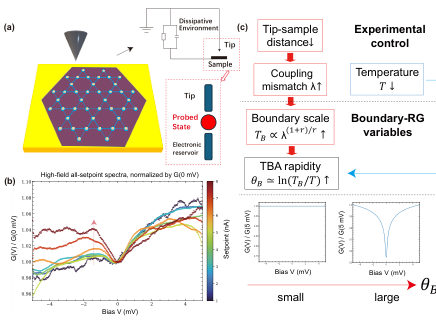
<figcaption class="paper-figure-caption"><b>Fig 1.</b> FIG. 1. Dissipative STM junction and normal-state DCB re- sponse. (a) Illustration of setup, where a tip is detecting the sample (blue) on a substrate (yellow), with a disorder layer between them (represented by purple). Insets: (Upper) Ef- fective circuit of STM junction in dissipative environment. (Lower) An illustration circuit of a lead-dot-lead (blue-red- blue) device. (b) 1 T spectra after superconductivity is sup- pressed, showing a zero-bias anomaly that strengthens as the tip is lowered (highlighted by red arrow). The fitted dissipa- tion strength is rHF ≈0.22. (c) Logic flow for the effect of lowering tip in RG theory. The right panels plot represen- tative DCB response of a...</figcaption>
</figure>
<figure class="paper-figure-card">
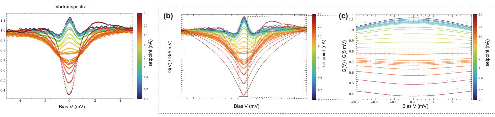
<figcaption class="paper-figure-caption"><b>Fig 2.</b> FIG. 2. Single-channel boundary-RG analysis of vortex-center spectra. (a) Experimental vortex-center spectra on the 37.6-nm island, showing a clean non-split zero-bias peak at low setpoint that evolves into a zero-bias dip as the tip is lowered. The color scale denotes the setpoint current. (b) Single-continuum-channel DCB/TBA fit to the vortex-center spectra with Eq. (3), giving rs v ≈0.19. (c) Low-bias zoom of (b), showing that the model captures the central peak-to-dip boundary flow. Dots are experimental data and solid curves are fits.</figcaption>
</figure>
<figure class="paper-figure-card">
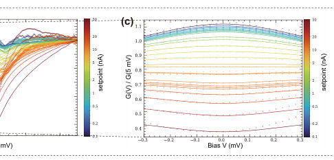
<figcaption class="paper-figure-caption"><b>Fig 3.</b> Fig. 2 shows the central boundary-RG test of the ex- periment. We first analyze the vortex-center spectra [Fig. 2(a)], acquired at B = 0.1 T on the same 37.6-nm island. In the high-tip, weak-coupling regime, the vortex center shows a clean, non-split ZBP on top of the small- gap background (see App. B), a line shape that would be a Majorana candidate in conventional static STM spec- troscopy. A tip-height flow can serve as a dynamical test. For r &lt; 1/2, Eq. (1) predicts that an isolated MZM flows toward the protected strong-coupling fixed point as the boundary coordinate TB/T is increased; equivalently, the zero-bias response should not be driven into the ordinary DCB valley....</figcaption>
</figure>
<figure class="paper-figure-card">
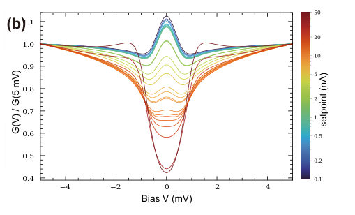
<figcaption class="paper-figure-caption"><b>Fig 4.</b> FIG. 4. Two-channel interpretation of the residual spectral weight in vortex spectra. (a) Experimental data of 37.6 nm vortex spectra. (b) Two-gap fit of the vortex spec- tra with Eq. (5), with an additional residual superconducting channel to the DCB-dressed vortex continuum. The fitted dissipation strength is rd v ≈0.18.</figcaption>
</figure>
<figure class="paper-figure-card">
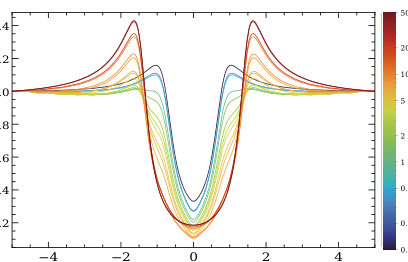
<figcaption class="paper-figure-caption"><b>Fig 5.</b> FIG. 3. Superconducting-gap spectra data and the two-channel interpretation. (a) Experimental data of 37.6 nm superconducting-gap spectra. (b) Two-gap fit of the superconducting spectra with Eq. (4), corresponding to a strongly tip-coupled small-gap channel and a weakly tip- coupled large-gap channel. The fitted dissipation strength is rSC ≈0.21.</figcaption>
</figure>
</div>

<p><strong>Summary.</strong> The authors developed a novel spectroscopic technique using tip-height tuning within the boundary Renormalization Group framework to probe vortex cores in superconductors. They successfully used this method to distinguish between true Majorana zero modes and trivial resonances by observing that the characteristic flow of the ZBP contradicted MZM theory, proving the peak was a false positive.</p>
<p><strong>Why it may be interesting.</strong> This work provides a powerful experimental methodology—using controlled environmental coupling (dissipative STM)—to perform dynamical quantum state verification, moving beyond simple spectral measurements to test fundamental topological protection in superconducting systems.</p>
<details>
<summary>Detailed structure</summary>
<p><strong>Main problem.</strong> The primary challenge is distinguishing between true topological superconducting vortex states, which host Majorana zero modes (MZMs), and false positive zero-bias conductance peaks (ZBPs) arising from conventional vortex cores using STM.</p>
<p><strong>Main result.</strong> By analyzing the dynamical evolution of the ZBP as the tip coupling is tuned via boundary renormalization group flow, the authors demonstrated that the observed peak was a non-topological feature whose flow contradicted MZM predictions.</p>
<p><strong>Method.</strong> The study combines low-temperature scanning tunneling microscopy (STM) measurements with advanced theoretical modeling using boundary Renormalization Group (RG) theory and the Thermodynamic Bethe Ansatz (TBA) to analyze dissipative quantum circuits.</p>
<p><strong>Model / system.</strong> The experiment is performed on $    ext{SrSn}_3$ thin films, treating the STM junction as a local probe coupled to an Ohmic environment. The physics is modeled using concepts from boundary RG flow applied to superconducting vortex cores and tunneling barriers.</p>
<p><strong>Key observables.</strong> Zero-bias conductance peak (ZBP) evolution; dissipation strength ($r$); spectral weight fitting across single-channel, two-channel SC gap, and high-field regimes.</p>
<p><strong>Important parameters / regimes.</strong> Dissipation strength $r < 1/2$; tip coupling parameter tuning the boundary RG flow; superconducting gap parameters ($\Delta$).</p>
<p><strong>Assumptions / limitations.</strong> The analysis assumes that the low-energy spectral evolution is governed by a universal dissipative environment response derived from TBA, allowing for the separation of trivial and topological contributions.</p>
<p><strong>Figures summary.</strong> Figures illustrate the setup (STM junction in a dissipative environment) and show the critical diagnostic: how lowering the tip drives an initial ZBP into a zero-bias dip, which is contrasted with theoretical MZM flow predictions. Other figures detail global fits across various spectral components.</p>
<p><strong>Paper structure.</strong> The paper establishes the ambiguity of static ZBPs, introduces the boundary RG/TBA framework to test dynamical protection, applies this method to $    ext{SrSn}_3$ vortex spectra, and concludes by showing that the observed flow pattern definitively rules out an MZM interpretation for the measured peak.</p>
</details>
<details>
<summary>Abstract</summary>
<p>Clean, nonsplit vortex zero-bias peaks (ZBPs) can be misinterpreted as Majorana zero modes (MZMs), making static scanning tunneling microscopy intrinsically ambiguous. Here we use the STM tip coupling to drive a local boundary-renormalization-group (boundary RG) flow, turning dynamical Coulomb blockade into a falsification test for Majorana-like ZBPs. Experimentally, in a $\mathrm{SrSn}_3$ thin film, normal-state spectra establish an Ohmic dissipative environment, and a common boundary-RG/thermodynamic-Bethe-ansatz analysis of the superconducting-gap and vortex-center spectra yields consistent dissipation strengths within the $r < 1/2$ Majorana-filter regime. Lowering the tip nevertheless drives a clean, non-split vortex-center ZBP into a zero-bias dip, opposite to the protected flow of an isolated MZM, unmasking the peak as a Majorana false positive produced by a conventional vortex-core state. The same flow selectively suppresses the strongly tip-coupled channel, resolving the two-gap superconductivity. Dissipative STM thus tests dynamical protection rather than spectral appearance.</p>
</details>
<p><sub><a href="#top">↑ back to top</a></sub></p>

<p><a id="paper-2607.24925"></a></p>
<h3 id="effective-field-theory-of-operator-scrambling-from-strong-to-weak-symmetry-breaking"><a href="http://arxiv.org/abs/2607.24925v1">Effective Field Theory of Operator Scrambling from Strong-to-Weak Symmetry Breaking</a></h3>
<p><strong>Authors:</strong> Bai-Lin Cheng, Shao-Kai Jian, Zhi-Cheng Yang<br>
<strong>Type:</strong> theory · <strong>Category:</strong> statistical mechanics · <strong>PDF:</strong> <a href="https://arxiv.org/pdf/2607.24925v1">https://arxiv.org/pdf/2607.24925v1</a><br>
<strong>Analysis basis:</strong> full PDF text, analyzed in chunks
<strong>Topic relevance:</strong> 🔥 <code>entanglement &amp; information structure</code> <strong>4/5</strong> · 🔥 <code>non-equilibrium dynamics</code> <strong>4/5</strong> · <code>Keldysh / 2PI / non-Gaussian methods</code> <strong>3/5</strong> · <code>non-equilibrium universality</code> <strong>3/5</strong> · <code>scars &amp; prethermalization</code> <strong>2/5</strong> · <code>correlated / nonlocal dissipation</code> <strong>1/5</strong> · <code>driven-dissipative phase transition</code> <strong>1/5</strong> · <code>methods for driven-dissipative</code> <strong>1/5</strong></p>
<div class="figure-strip-hint">↔ Scroll figures horizontally</div>
<div class="paper-figures-scroll">
<figure class="paper-figure-card">
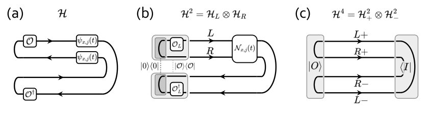
<figcaption class="paper-figure-caption"><b>Fig 1.</b> Figure 1. (a) To compute OTOCs such as (2.9) and (2.10), the path integral must be taken along a four-fold Keldysh contour. (b) In the doubled Hilbert space H2, this four-fold contour is reduced to a standard two-fold contour. The OTOC is equivalent to the expectation value of the occupation-number operator Nx,j(t) in the state |O⟩≡(OL ⊗IR)|0⟩. (c) The system can be further mapped to a single directed path in the quadrupled Hilbert space H4, where the initial state |O⟩ originates from the physical infinite-temperature initial state, while the final state ⟨I| corresponds to the trace operation in H2.</figcaption>
</figure>
<figure class="paper-figure-card">
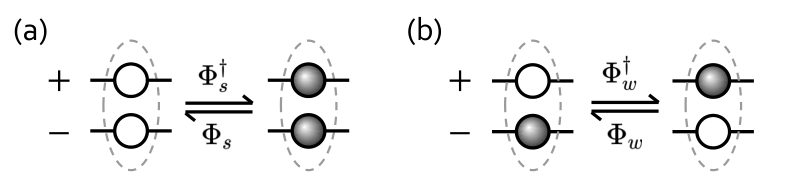
<figcaption class="paper-figure-caption"><b>Fig 2.</b> Figure 2. The physical interpretations of Φ-operators defined in (3.5). (a) Φs (Φ† s) annihilates (creates) fermions in pairs on the + and −contours. (b) Φw (Φ† w) moves a fermion from the + (−) contour to the −(+) contour. Fermion species and site indices are suppressed.</figcaption>
</figure>
<figure class="paper-figure-card">
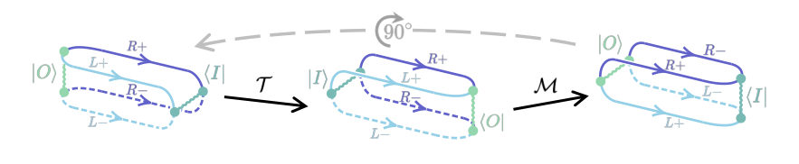
<figcaption class="paper-figure-caption"><b>Fig 3.</b> Figure 3. The contour structure is invariant under a combination of time reversal (T ) and a permutation (M) of the contour labels.</figcaption>
</figure>
<figure class="paper-figure-card">
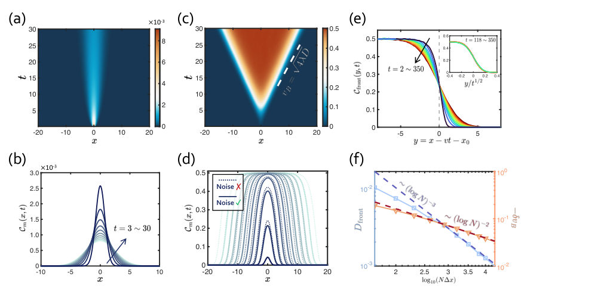
<figcaption class="paper-figure-caption"><b>Fig 4.</b> Figure 4. Numerical solutions of the FKPP equation (4.10), starting from an initial operator at the origin with m = 5, for (a)&amp;(b) the noninteracting case with λ = 0, and (c)&amp;(d) the interacting case with λ = 1, averaged over 103 samples. Time slices for t = 3 ∼30 are shown in (b) and (d), respectively. In panel (d), the solid curves denote the noisy solutions, while the dashed curves denote the solutions of the deterministic equation without noise. The numerical parameters are chosen as D = 0.1 and N∆x = 103. Noise and the 1/(N∆x) cutoff induce (c) a reduction of the butterfly velocity and (e) wavefront broadening ∝t1/2. In panel (e), the FKPP equation is solved numerically using a fully...</figcaption>
</figure>
<figure class="paper-figure-card">
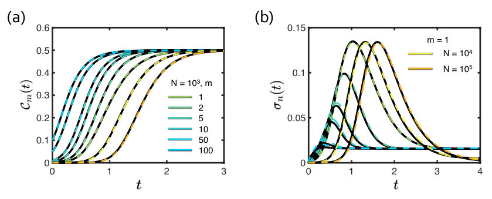
<figcaption class="paper-figure-caption"><b>Fig 5.</b> Figure 6. Numerical simulations of the (0 + 1)d FKPP equation predicted by (5.16) (dashed color lines) and comparison with the operator size computed from the master-equation approach in the Brownian SYK4 model [36] (black solid lines). The first moment of n(t) corresponds to the OTOC, and is shown in (a). The standard deviation σn = (⟨n2⟩−⟨n⟩2)1/2, related to the second moment of n, is shown in (b). The parameters are chosen as λ = J4 = 8, the number of simulation samples is 5 × 104, and the finite-N cutoff is taken to be θ(n −m/N).</figcaption>
</figure>
</div>

<p><strong>Summary.</strong> The paper develops an Effective Field Theory to explain operator scrambling using Out-of-Time-Ordered Correlators (OTOCs). By identifying an emergent strong U(1) symmetry in the doubled Hilbert space, the authors derive that the dynamics must follow a noisy FKPP equation. This provides a unified, symmetry-based understanding of how quantum information spreads and thermalizes in complex many-body systems.</p>
<p><strong>Why it may be interesting.</strong> This work provides a powerful, general theoretical tool—an EFT derived from symmetry principles—to describe non-equilibrium dynamics in strongly interacting quantum systems, which is highly relevant for understanding thermalization and chaos in many-body physics.</p>
<details>
<summary>Detailed structure</summary>
<p><strong>Main problem.</strong> The primary goal is to find a general symmetry principle that governs the effective dynamics of operator scrambling, which is diagnosed by Out-of-Time-Ordered Correlators (OTOCs). The challenge lies in developing an Effective Field Theory (EFT) for this process.</p>
<p><strong>Main result.</strong> The OTOC dynamics are shown to be governed by a noisy FKPP equation, derived from an EFT built upon the spontaneous breaking of an emergent strong U(1) symmetry. This framework unifies descriptions of early-time exponential growth and late-time saturation in operator spreading.</p>
<p><strong>Method.</strong> The authors develop a symmetry-based Effective Field Theory (EFT) by mapping the four-fold Keldysh contour representation of the OTOC onto a doubled Hilbert space, allowing for systematic analysis via slow modes and emergent symmetries.</p>
<p><strong>Model / system.</strong> The theory is developed for Majorana systems (specifically Brownian or short-time-correlated large-N Majorana systems). A key test case used to verify the construction is the Brownian Sachdev-Ye-Kitaev (SYK) chain.</p>
<p><strong>Key observables.</strong> Out-of-Time-Ordered Correlators (OTOCs), operator size ($N[O(t)]$), and the resulting dynamics described by a noisy FKPP equation.</p>
<p><strong>Important parameters / regimes.</strong> The analysis involves organizing terms based on strong-to-weak U(1) symmetry breaking, and key parameters include the Lyapunov exponent ($\lambda_L$) which is directly related to the noise strength.</p>
<p><strong>Assumptions / limitations.</strong> The derivation relies on systematic expansions in powers of the slow mode field $\phi$, assuming consistency with Schwinger-Keldysh conditions, and imposing constraints like an emergent duality combining time reversal and contour permutation.</p>
<p><strong>Figures summary.</strong> Figure 1 illustrates a mathematical mapping from a four-fold Keldysh contour integral to a standard two-segment contour in a doubled Hilbert space, which is crucial for the EFT construction.</p>
<p><strong>Paper structure.</strong> The paper first establishes the problem using OTOCs and introduces the symmetry-based EFT framework. It then derives the effective action by exploiting emergent symmetries (U(1) breaking), leading to the noisy FKPP equation. Finally, it verifies this structure using a specific model like the Brownian SYK chain.</p>
</details>
<details>
<summary>Abstract</summary>
<p>Operator scrambling is commonly diagnosed by the growth of out-of-time-ordered correlators (OTOCs), yet a general symmetry principle underlying their effective dynamics has remained elusive. For Brownian or short-time-correlated large-$N$ Majorana systems, we develop a symmetry-based effective field theory for operator scrambling, organized by a strong-to-weak U(1) symmetry breaking in operator space. The key observation is that, in the noninteracting fermion limit, the four-fold Keldysh contour representation of an OTOC admits an emergent strong U(1) symmetry in a doubled Hilbert-space description, even when the original system has no ordinary conserved quantity. The associated slow mode is the phase of the strong-charge creation operator, whose conjugate density is identified with the local operator size. Generic interactions explicitly break the strong symmetry and generate a mass term at lowest order for the would-be Goldstone mode, thereby converting diffusive operator spreading into chaotic growth. We further show that higher-order symmetry breaking terms are tightly constrained by an emergent duality that combines time reversal with contour permutation. This duality fixes the effective action up to quadratic order in the response field, relates the multiplicative noise strength directly to the Lyapunov exponent, and makes the positivity of the Lyapunov exponent a consequence of convergence of the real-time path integral. The resulting OTOC dynamics is governed by a noisy FKPP equation, which captures within a unified framework the early-time exponential growth, ballistic propagation, nonlinear saturation, and stochastic front broadening of operator scrambling. We verify this construction in a Brownian SYK chain, where a direct saddle-point expansion reproduces the symmetry-based effective action. Our results reveal a symmetry origin of operator-size hydrodynamics and scrambling.</p>
</details>
<p><sub><a href="#top">↑ back to top</a></sub></p>

<p><a id="paper-2607.24967"></a></p>
<h3 id="spin-cqed-with-bulk-germanium-spin-qubits"><a href="http://arxiv.org/abs/2607.24967v1">Spin-cQED with bulk germanium spin qubits</a></h3>
<p><strong>Authors:</strong> A. -F. Kalo, E. A. Rodríguez-Mena, J. C. Abadillo-Uriel, M. Filippone, Y. -M. Niquet<br>
<strong>Type:</strong> theory · <strong>Category:</strong> quantum information and computing · <strong>PDF:</strong> <a href="https://arxiv.org/pdf/2607.24967v1">https://arxiv.org/pdf/2607.24967v1</a><br>
<strong>Analysis basis:</strong> full PDF text, analyzed in chunks
<strong>Topic relevance:</strong> 🔥 <code>spintronics-quantum-optics interface</code> <strong>4/5</strong> · <code>Tavis-Cummings &amp; cavity-many-emitter</code> <strong>3/5</strong> · <code>correlated cavity matter</code> <strong>3/5</strong> · <code>analog quantum simulation</code> <strong>2/5</strong> · <code>exotic spin models in light-matter</code> <strong>2/5</strong> · <code>Keldysh / 2PI / non-Gaussian methods</code> <strong>1/5</strong> · <code>QC/QI experiment</code> <strong>1/5</strong> · <code>driven-dissipative phase transition</code> <strong>1/5</strong> · <code>methods for driven-dissipative</code> <strong>1/5</strong></p>
<div class="figure-strip-hint">↔ Scroll figures horizontally</div>
<div class="paper-figures-scroll">
<figure class="paper-figure-card">
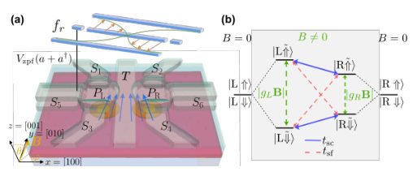
<figcaption class="paper-figure-caption"><b>Fig 1.</b> FIG. 1. Device for spin-photon coupling. (a) The strained QW device. Germanium is colored in red, Ge0.8Si0.2 in blue and the aluminium gates in gray. The 20-nm-thick gates are arranged on two levels separated from each other and from the heterostructure by 6 nm of Al2O3: the barrier (T) and side gates (Sn) on the first level, and the plunger gates PL and PR on the second (diameter 130 nm; distance between cen- ters 170 nm). A resonator with frequency fr and zero-point fluctuations Vzpf is connected to PL. In the bulk heterostruc- ture the buffer and QW are replaced by an unstrained Ge substrate. The yellow shapes are the iso-density surfaces that enclose 20% and 80% of the L and R orbitals....</figcaption>
</figure>
<figure class="paper-figure-card">
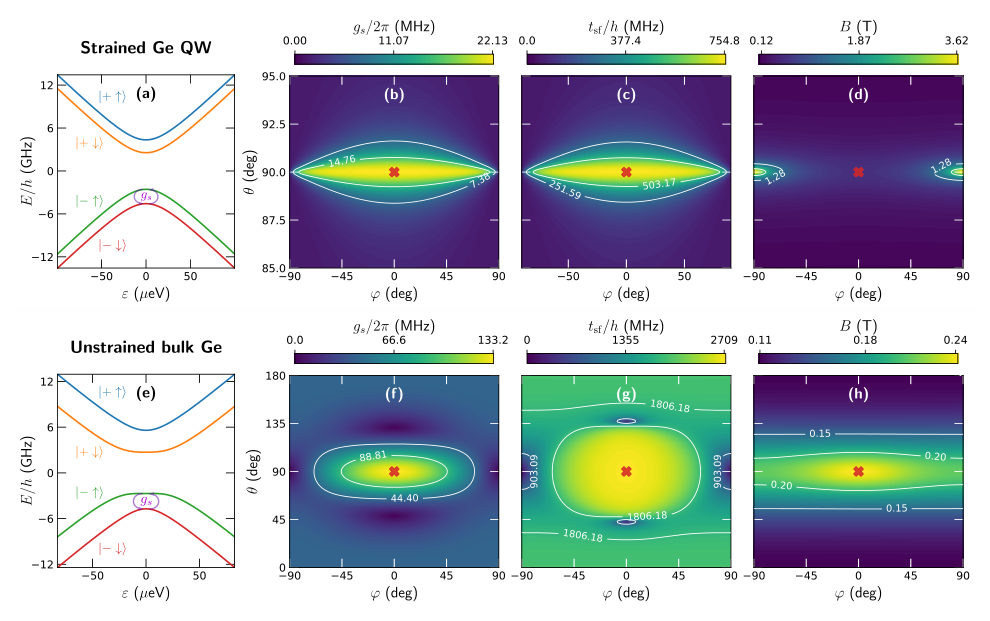
<figcaption class="paper-figure-caption"><b>Fig 2.</b> FIG. 2. Spin-photon coupling in (a-d) a strained Ge QW and (e-h) an unstrained, bulk Ge heterostructure: (a, e) Spectrum of the DQD as a function of detuning energy ε (B ∥x). The resonator couples to the hole in the |−↑⟩and |−↓⟩states; (b, f) Spin-photon coupling gs, (c, g) spin-flip tunnel coupling tsf, (d, h) magnetic field amplitude at resonance (ωs/2π = 2 GHz) as a function of the orientation of B (see Fig. 1). The red cross highlights the optimal orientation B ∥x. In the strained Ge QW, VL = VR = −20.5 mV and VT = −5 mV (all side gates grounded), while in the bulk Ge heterostructure, VL = VR = −43.4 mV and VT = −11.6 mV (top and bottom side gates bias VS1 = VS2 = VS3 = VS4 = 30 mV).</figcaption>
</figure>
<figure class="paper-figure-card">
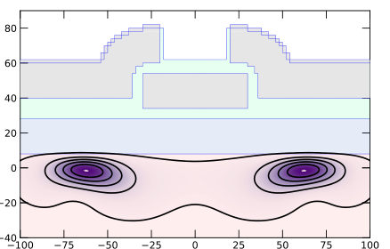
<figcaption class="paper-figure-caption"><b>Fig 3.</b> FIG. 3. Map of the density (arbitrary units) in the |−⟩state of the unstrained, bulk Ge heterostructure at zero detuning, in the (xz) symmetry plane of the device.</figcaption>
</figure>
</div>

<p><strong>Summary.</strong> The paper investigates using bulk germanium as a superior material for spin-cQED qubits compared to strained heterostructures. By modeling the system's complex spin physics using the Luttinger–Kohn Hamiltonian, the authors show that hole spins in bulk Ge can achieve strong coupling ($g_s \gtrsim 100$ MHz) with microwave resonators. This makes bulk germanium a highly promising and scalable platform for quantum computation.</p>
<p><strong>Why it may be interesting.</strong> This work directly addresses solid-state quantum computing hardware by demonstrating a high-performance qubit platform (Ge hole spins) capable of strong interaction with superconducting cavities, which is central to circuit QED architectures.</p>
<details>
<summary>Detailed structure</summary>
<p><strong>Main problem.</strong> The primary goal is achieving strong spin-photon coupling ($g_s$) for scalable solid-state quantum computation using hole spins in semiconductor double quantum dots coupled to microwave resonators (spin-cQED).</p>
<p><strong>Main result.</strong> Unstrained bulk germanium is established as a compelling platform, showing that hole spins can reach strong coupling regimes with superconducting resonators, achieving $g_s/2\pi \gtrsim 100$ MHz.</p>
<p><strong>Method.</strong> The analysis involves systematic modeling using the Luttinger–Kohn Hamiltonian to derive an effective spin-photon Hamiltonian and calculate coupling strengths by diagonalizing these models.</p>
<p><strong>Model / system.</strong> The system uses hole spins in double quantum dots (DQD) within bulk germanium, compared against strained heterostructures. The physics is governed by the LK Hamiltonian, which accounts for strong spin-orbit interactions mixing heavy-hole and light-hole states.</p>
<p><strong>Key observables.</strong> Spin-photon coupling strength ($g_s/2\pi$), spin-flip tunnel matrix element ($t_{sf}/	ext{2}\pi$), and sensitivity to magnetic field orientation ($\mathbf{B}$).</p>
<p><strong>Important parameters / regimes.</strong> Achievable $g_s \gtrsim 100$ MHz; the enhancement originates from SO interactions beyond the perturbative regime.</p>
<p><strong>Assumptions / limitations.</strong> The analysis assumes operating at zero detuning ($\epsilon = 0$) and relies on deriving an effective Hamiltonian by treating strong spin-orbit coupling effects.</p>
<p><strong>Figures summary.</strong> Figures illustrate device setups comparing strained QWs to unstrained bulk structures, showing the mechanism of spin-photon coupling via hybridization, and detailing $g_s$ dependence on $\mathbf{B}$ orientation for both platforms.</p>
<p><strong>Paper structure.</strong> The paper systematically models the system using the LK Hamiltonian, derives an effective spin-photon Hamiltonian, compares results between strained and bulk Ge structures, and concludes by establishing bulk Ge as a superior platform due to higher coupling strengths and reduced field dependence.</p>
</details>
<details>
<summary>Abstract</summary>
<p>Unstrained bulk germanium is a particularly attractive material for circuit quantum electrodynamics with spins (spin-cQED). We show, through systematic modeling and comparison with state-of-the-art strained germanium heterostructures, that hole spins in bulk germanium double quantum dots readily reach the strong-coupling regime with superconducting microwave resonators, achieving spin-photon coupling strengths $g_s/2π\gtrsim100$\,MHz. This enhancement originates from large spin-orbit interactions beyond the perturbative regime. In addition, the coupling is much less sensitive to the orientation of the applied magnetic field, which shall ease operation and limit the impact of device-to-device variability. Our results establish bulk germanium as a compelling platform for scalable spin-cQED.</p>
</details>
<p><sub><a href="#top">↑ back to top</a></sub></p>

<p><a id="paper-2607.25307"></a></p>
<h3 id="actualization-records-and-the-emergence-of-entropic-time"><a href="http://arxiv.org/abs/2607.25307v1">Actualization, Records, and the Emergence of Entropic Time</a></h3>
<p><strong>Authors:</strong> Lionel Martellini<br>
<strong>Type:</strong> theory · <strong>Category:</strong> other · <strong>PDF:</strong> <a href="https://arxiv.org/pdf/2607.25307v1">https://arxiv.org/pdf/2607.25307v1</a><br>
<strong>Analysis basis:</strong> full PDF text, analyzed in chunks
<strong>Topic relevance:</strong> 🔥 <code>entanglement &amp; information structure</code> <strong>4/5</strong> · 🔥 <code>quantum measurements</code> <strong>4/5</strong> · <code>measurement-induced transitions</code> <strong>3/5</strong> · <code>non-equilibrium dynamics</code> <strong>2/5</strong> · <code>correlated / nonlocal dissipation</code> <strong>1/5</strong> · <code>driven-dissipative phase transition</code> <strong>1/5</strong> · <code>methods for driven-dissipative</code> <strong>1/5</strong> · <code>non-equilibrium universality</code> <strong>1/5</strong></p>
<div class="figure-strip-hint">↔ Scroll figures horizontally</div>
<div class="paper-figures-scroll">
<figure class="paper-figure-card">
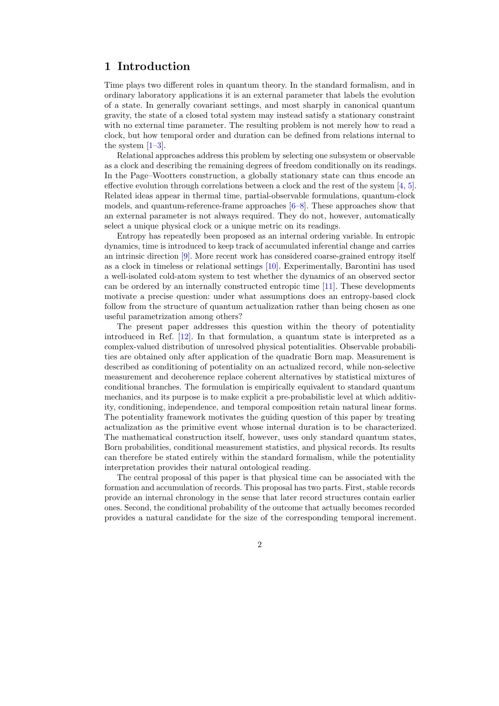
<figcaption class="paper-figure-caption"><b>Fig 1.</b> Low-resolution page preview, page 2</figcaption>
</figure>
<figure class="paper-figure-card">
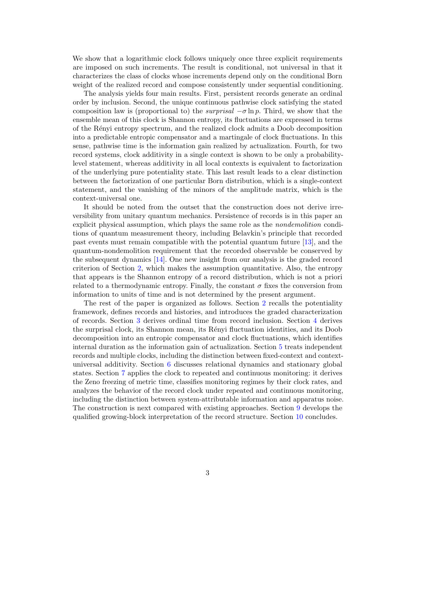
<figcaption class="paper-figure-caption"><b>Fig 2.</b> Low-resolution page preview, page 3</figcaption>
</figure>
<figure class="paper-figure-card">
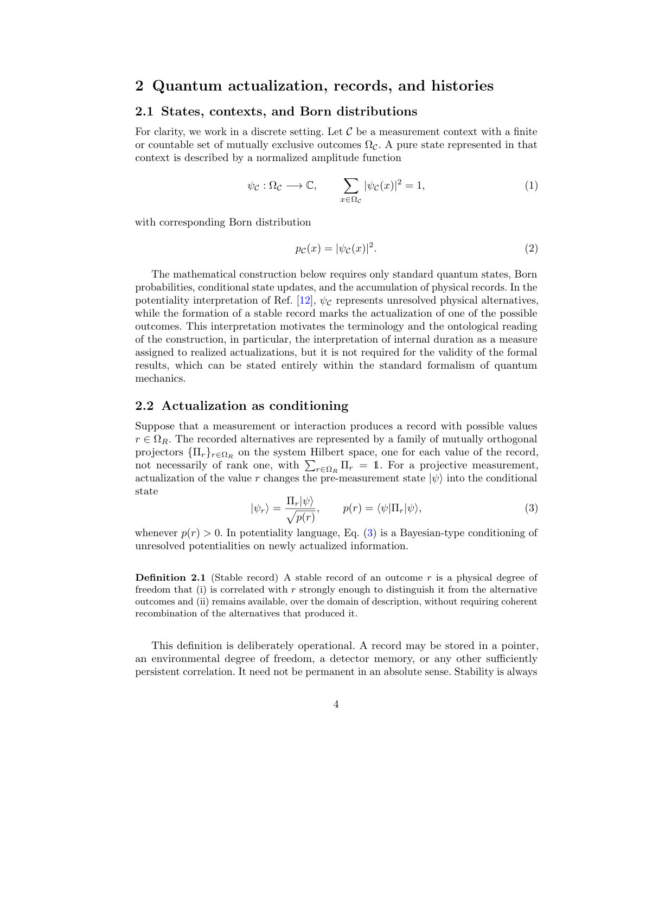
<figcaption class="paper-figure-caption"><b>Fig 3.</b> Low-resolution page preview, page 4</figcaption>
</figure>
<figure class="paper-figure-card">
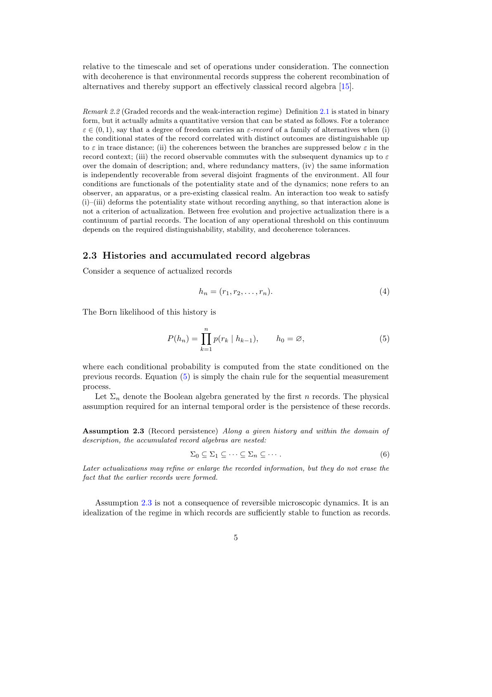
<figcaption class="paper-figure-caption"><b>Fig 4.</b> Low-resolution page preview, page 5</figcaption>
</figure>
<figure class="paper-figure-card">
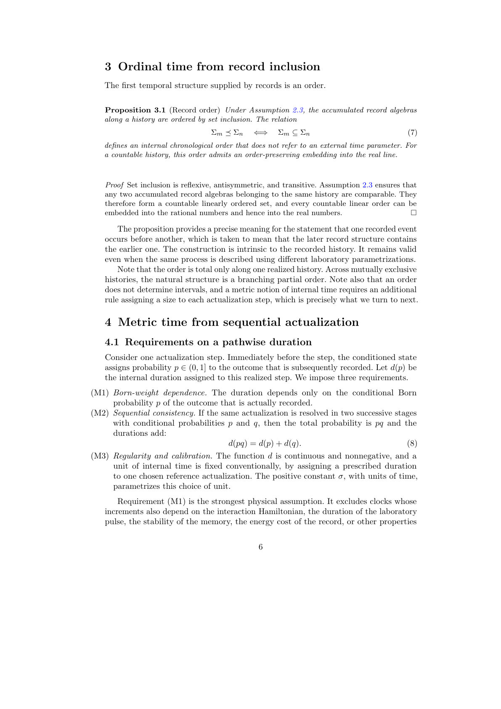
<figcaption class="paper-figure-caption"><b>Fig 5.</b> Low-resolution page preview, page 6</figcaption>
</figure>
</div>

<p><strong>Summary.</strong> This paper proposes that internal time in quantum mechanics arises from the accumulation of 'records' formed during actualization events. The duration assigned to an outcome is quantified by its surprisal ($-\ln p$), leading to a pathwise clock whose average value corresponds to the Shannon entropy. It offers a rigorous, information-theoretic foundation for understanding time without external parameters.</p>
<p><strong>Why it may be interesting.</strong> It provides a deep theoretical link between fundamental information theory (entropy/surprisal) and the emergence of time in quantum mechanics, which is highly relevant to foundational studies in open systems and gravity.</p>
<details>
<summary>Detailed structure</summary>
<p><strong>Main problem.</strong> The paper develops a record-based account of internal time in quantum mechanics, aiming to define temporal order and duration without relying on external time parameters.</p>
<p><strong>Main result.</strong> Internal time is identified with the accumulated surprisal ($-\ln p$) associated with actualized outcomes, leading to an ensemble mean clock proportional to the Shannon entropy of the process.</p>
<p><strong>Method.</strong> The framework uses conditioning on 'records' (actualized information) and derives the temporal measure by imposing consistency requirements on how duration composes additively under sequential quantum measurements.</p>
<p><strong>Model / system.</strong> The model involves quantum states undergoing sequential measurement contexts, where physical history is represented by an accumulating, nested set of stable records ($\Sigma_n$).</p>
<p><strong>Key observables.</strong> Surprisal ($-\ln p$), Shannon Entropy ($H$), Rényi entropy spectrum, and the pathwise clock $   au(h_n)$.</p>
<p><strong>Important parameters / regimes.</strong> The constant $\sigma$ (scaling factor between information gain and time units) and the distinguishability threshold $\epsilon$.</p>
<p><strong>Assumptions / limitations.</strong> Key assumptions include that duration depends only on conditional Born probability, that records persist to form a nested history, and that actualization is equivalent to conditioning on this record.</p>
<p><strong>Paper structure.</strong> The paper progresses by defining stable records, deriving the pathwise clock proportional to surprisal, establishing the ensemble mean via Shannon entropy, and concluding with mathematical characterizations like Doob decomposition and additivity conditions for multiple clocks.</p>
</details>
<details>
<summary>Abstract</summary>
<p>We develop a record-based account of internal time in quantum mechanics, where the formation of a stable record is represented as conditioning on actualized information, and along a history the accumulated record algebras are ordered by inclusion. If the duration of a realized outcome depends only on its conditional Born probability, composes additively under sequential conditioning, and is continuous and calibrated, then the actualization of each outcome contributes an internal duration equal to its surprisal, the negative logarithm of that probability, so that a certain outcome contributes no duration, whereas less likely outcomes contribute larger increments. The ensemble mean of the accumulated clock is the Shannon entropy of the record process, its moment-generating function is fixed by the Rényi entropy spectrum, and the realized clock admits a Doob decomposition into a predictable entropic compensator and a martingale of clock fluctuations, so that each increment is the information gain of the corresponding actualization. Records are characterized by graded criteria of distinguishability, decoherence, and stability. We also clarify the multiple-clock problem: in one fixed context, additivity of two surprisal clocks is equivalent to factorization of the Born distribution in that context, whereas for a pure bipartite state, additivity in every pair of local contexts is equivalent to rank-one factorization of the joint state and to the vanishing of all its $2\times2$ minors.</p>
</details>
<p><sub><a href="#top">↑ back to top</a></sub></p>

<p><a id="paper-2607.25496"></a></p>
<h3 id="asymmetric-information-scrambling-and-eigenstate-thermalization-in-inhomogeneous-xxz-spin-chains"><a href="http://arxiv.org/abs/2607.25496v1">Asymmetric information scrambling and eigenstate thermalization in inhomogeneous XXZ spin chains</a></h3>
<p><strong>Authors:</strong> Shivam Mishra, Ravi Prakash<br>
<strong>Type:</strong> theory · <strong>Category:</strong> statistical mechanics · <strong>PDF:</strong> <a href="https://arxiv.org/pdf/2607.25496v1">https://arxiv.org/pdf/2607.25496v1</a><br>
<strong>Analysis basis:</strong> full PDF text, analyzed in chunks
<strong>Topic relevance:</strong> 🔥 <code>entanglement &amp; information structure</code> <strong>4/5</strong> · <code>analog quantum simulation</code> <strong>3/5</strong> · <code>non-equilibrium dynamics</code> <strong>3/5</strong> · <code>non-equilibrium universality</code> <strong>2/5</strong> · <code>scars &amp; prethermalization</code> <strong>2/5</strong> · <code>Frenkel-Kontorova</code> <strong>1/5</strong> · <code>Keldysh / 2PI / non-Gaussian methods</code> <strong>1/5</strong> · <code>exotic spin models in light-matter</code> <strong>1/5</strong></p>
<div class="figure-strip-hint">↔ Scroll figures horizontally</div>
<div class="paper-figures-scroll">
<figure class="paper-figure-card">
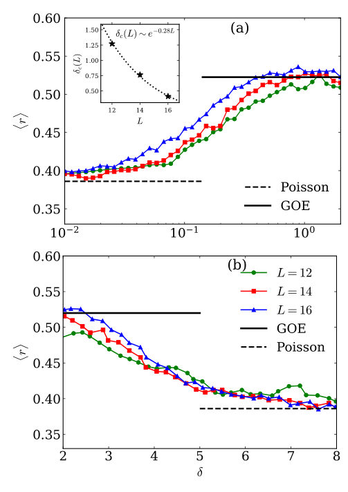
<figcaption class="paper-figure-caption"><b>Fig 1.</b> FIG. 2. (Color online) Average ratio of consecutive level spac- ings, ⟨r⟩, as a function of the interaction-gradient strength δ for system sizes L = 12, 14, and 16. The black dashed and solid horizontal lines denote the Poisson value, ⟨r⟩≈0.38, and the GOE value, ⟨r⟩≈0.53, respectively. (a) Starting from the homogeneous XXZ chain (δ = 0), ⟨r⟩increases from the Poisson value toward the GOE prediction, indicating the crossover from integrability to quantum chaos with increasing interaction gradient. The inset shows the finite-size scaling of the crossover value δc(L) corresponding to the onset of GOE statistics. (b) For larger interaction gradients, ⟨r⟩gradually decreases from the GOE value...</figcaption>
</figure>
<figure class="paper-figure-card">
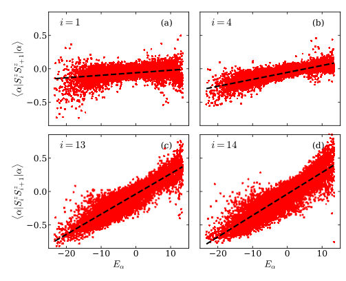
<figcaption class="paper-figure-caption"><b>Fig 2.</b> FIG. 3. (Color online) (a)–(d) Diagonal ETH matrix ele- ments ⟨α|Sz i Sz i+1|α⟩for the bond operator at i = 1, 4, 13, and 14, respectively, plotted as functions of the eigenenergy Eα. Results are shown for the inhomogeneous XXZ chain with L = 16 and δ = 1. The black dashed lines represent linear fits to the analytical prediction of Eq. (12), demonstrating that the diagonal matrix elements vary linearly with the eigenen- ergy.</figcaption>
</figure>
<figure class="paper-figure-card">
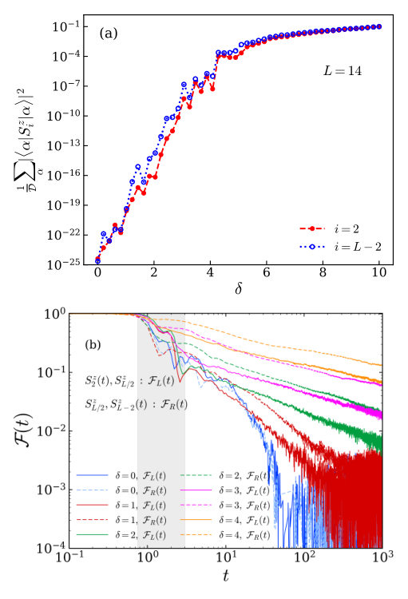
<figcaption class="paper-figure-caption"><b>Fig 3.</b> FIG. 5. (Color online) (a) Averaged squared diagonal matrix elements as a function of the interaction gradient δ for the local spin operator Sz i at sites i = 2 and i = L −2 for system size L = 14. The averaged squared diagonal matrix elements remain vanishingly small throughout the chaotic regime due to the symmetry, for which ⟨α|Sz i |α⟩= 0 [Eq. (11)]. (b) Cor- responding OTOCs, FL(t) and FR(t), for δ = 0, 1, 2, 3 and 4. Despite the vanishingly small diagonal matrix elements, the more weakly interacting side exhibits a steeper relaxation within the shaded intermediate-time window, and this asym- metry becomes more pronounced with increasing δ.</figcaption>
</figure>
<figure class="paper-figure-card">
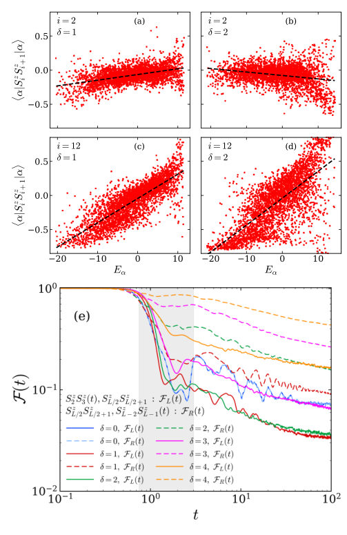
<figcaption class="paper-figure-caption"><b>Fig 4.</b> FIG. 4. (Color online) (a),(b) Diagonal ETH matrix elements ⟨α|Sz i Sz i+1|α⟩for the bond operator at i = 2 and (c),(d) at i = L−2, plotted as functions of the eigenenergy Eα. Results are shown for δ = 1 [(a),(c)] and δ = 2 [(b),(d)] with L = 14. The dashed black lines are linear fits based on the analytical prediction of Eq. (12). (e) Corresponding OTOCs, FL(t) and FR(t), for δ = 0, 1, 2, 3 and 4. The smaller weight of the diagonal matrix elements on the weakly interacting side is associated with lower long-time OTOC saturation values and steeper decay within the shaded intermediate-time window.</figcaption>
</figure>
<figure class="paper-figure-card">
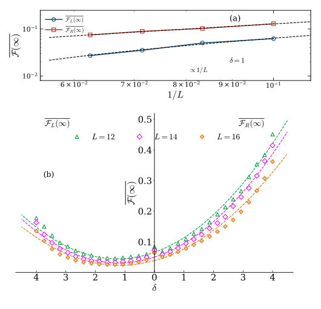
<figcaption class="paper-figure-caption"><b>Fig 5.</b> FIG. 6. (Color online) (a) Finite-size scaling of the infinite- time saturation value of the OTOC for system sizes L = 10, 12, 14, and 16. The black dashed line shows the fit to the scaling relation F(∞) ∝1/L. (b) Infinite-time saturation values of the OTOCs for the bond operator Sz i Sz i+1, FL(∞) and FR(∞), as functions of the interaction gradient δ for sys- tem sizes L = 12, 14, and 16. Open symbols denote numeri- cal long-time averages obtained by averaging over the twenty time points at t = O(109), while the dashed lines represent fits to F(∞) = a</figcaption>
</figure>
</div>

<p><strong>Summary.</strong> The paper analyzes how spatial variations in interactions within an XXZ spin chain lead to asymmetric information scrambling, quantified using OTOCs. By combining ETH theory with numerical calculations, the authors show that gradients suppress scrambling on strongly coupled sides and provide an analytical explanation for this asymmetry. This establishes deterministic inhomogeneity as a powerful tool for controlling quantum dynamics.</p>
<p><strong>Why it may be interesting.</strong> This work provides a concrete, microscopic mechanism—deterministic gradients—to control quantum information dynamics (scrambling) in lattice models, which is highly relevant for understanding engineered quantum simulators.</p>
<details>
<summary>Detailed structure</summary>
<p><strong>Main problem.</strong> The study investigates how deterministic spatial inhomogeneity affects information scrambling dynamics and eigenstate thermalization within quantum many-body systems.</p>
<p><strong>Main result.</strong> The interaction gradient induces a pronounced left–right asymmetry in information scrambling, causing operators on strongly interacting sides to exhibit suppressed scrambling compared to weakly interacting sides.</p>
<p><strong>Method.</strong> The authors use Out-of-Time-Ordered Correlators (OTOCs) and analyze diagonal matrix elements within the Eigenstate Thermalization Hypothesis (ETH) framework.</p>
<p><strong>Model / system.</strong> The primary model is an inhomogeneous XXZ spin chain, characterized by a spatially varying interaction profile $Jz(i; \delta)$. The analysis also touches upon the inhomogeneous transverse-field Ising model (ITFIM).</p>
<p><strong>Key observables.</strong> Out-of-Time-Ordered Correlators (OTOCs), spectral statistics ($\langle r 
angle$), and diagonal matrix elements of local operators.</p>
<p><strong>Important parameters / regimes.</strong> The interaction gradient strength $\delta$ is the key parameter, controlling the crossover from integrable ($\delta=0$) to chaotic regimes.</p>
<p><strong>Assumptions / limitations.</strong> The analysis focuses on the infinite-temperature regime and utilizes the ETH framework to connect dynamics to energy eigenbasis properties.</p>
<p><strong>Figures summary.</strong> Figures illustrate the evolution of spectral statistics ($\langle r 
angle$ vs. $\delta$), showing crossovers between Poisson, GOE, and nonergodic regimes; they also show OTOC dynamics revealing left-right asymmetry in scrambling.</p>
<p><strong>Paper structure.</strong> The paper systematically analyzes how spatial inhomogeneity modifies information scrambling by calculating OTOCs and applying ETH diagnostics to determine the finite-size saturation value of these correlators.</p>
</details>
<details>
<summary>Abstract</summary>
<p>Deterministic spatial inhomogeneity has become increasingly relevant in experimentally engineered quantum many-body systems, where interaction gradients can strongly influence nonequilibrium dynamics. Motivated by this, we investigate out-of-time-ordered correlators (OTOCs) and their connection to the eigenstate thermalization hypothesis (ETH) in inhomogeneous XXZ spin chains. Using a deterministic spatially varying interaction profile, we show that finite interaction gradients ($δ>0$) induce a pronounced left--right asymmetry in information scrambling, as quantified by OTOCs. This asymmetry persists even when the system exhibits spectral signatures of quantum chaos, with operators on the strongly interacting side exhibiting suppressed scrambling. To elucidate the origin of the asymmetric finite-size long-time saturation value of OTOCs, we employ two complementary approaches. First, we analyze the diagonal matrix elements of the OTOC observables in the energy eigenbasis within the ETH framework. Second, we derive an analytical expression for the finite-size saturation value based on the overlap between the Hamiltonian and the OTOC observables, which explicitly incorporates the spatial interaction profile. The analytical prediction is fully consistent with the numerical results and provides a microscopic explanation for how deterministic interaction gradients generate the observed asymmetry in the long-time saturation of OTOCs.</p>
</details>
<p><sub><a href="#top">↑ back to top</a></sub></p>

<p><a id="paper-2607.25360"></a></p>
<h3 id="relaxation-of-quenched-structural-glasses-descent-in-a-stiffening-caging-potential-over-inflection-point-speed-bumps"><a href="http://arxiv.org/abs/2607.25360v1">Relaxation of quenched structural glasses: descent in a stiffening caging potential over inflection-point 'speed bumps'</a></h3>
<p><strong>Authors:</strong> Ting Qu, Deng Pan, Yuliang Jin<br>
<strong>Type:</strong> theory · <strong>Category:</strong> disordered systems and neural networks · <strong>PDF:</strong> <a href="https://arxiv.org/pdf/2607.25360v1">https://arxiv.org/pdf/2607.25360v1</a><br>
<strong>Analysis basis:</strong> full PDF text, analyzed in chunks
<strong>Topic relevance:</strong> 🔥 <code>non-equilibrium dynamics</code> <strong>4/5</strong> · <code>non-equilibrium universality</code> <strong>3/5</strong> · <code>scars &amp; prethermalization</code> <strong>3/5</strong> · <code>driven-dissipative phase transition</code> <strong>2/5</strong> · <code>Frenkel-Kontorova</code> <strong>1/5</strong> · <code>Keldysh / 2PI / non-Gaussian methods</code> <strong>1/5</strong> · <code>analog quantum simulation</code> <strong>1/5</strong> · <code>correlated / nonlocal dissipation</code> <strong>1/5</strong> · <code>methods for driven-dissipative</code> <strong>1/5</strong></p>
<div class="figure-strip-hint">↔ Scroll figures horizontally</div>
<div class="paper-figures-scroll">
<figure class="paper-figure-card">
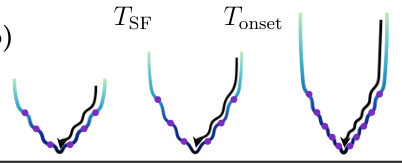
<figcaption class="paper-figure-caption"><b>Fig 1.</b> FIG. 1. Two pictures for GD dynamics in glasses. (a) Mean-field mixed p-spin picture [6, 14]. For T &gt; Tonset, the dynamics is dominated by saddle points (yellow diamonds) before ending in a marginal state. For T &lt; TSF, the dynamics follows a state within a basin. The regime TSF &lt; T &lt; Tonset is not fully understood theoretically. (b) Picture for structural glasses. The system descends in a stiffening caging potential, passing through inflection points (purple circles). The start- ing point lowers with decreasing T, but no characteristic tem- perature separates qualitatively distinct dynamical regimes.</figcaption>
</figure>
<figure class="paper-figure-card">
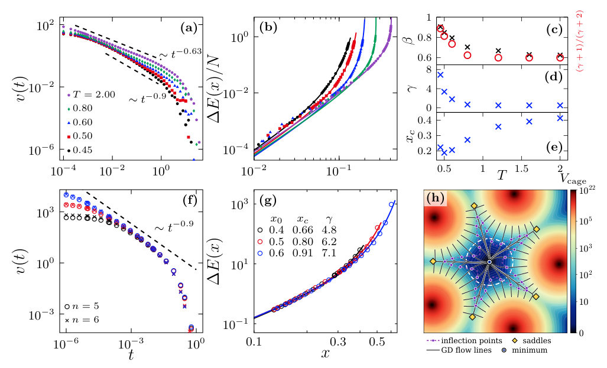
<figcaption class="paper-figure-caption"><b>Fig 2.</b> FIG. 2. Gradient descent dynamics and the effective caging potential. (a-e) Results for the 3D KALJ model. (a) Average velocity v(t) for different temperatures T, with power-law fits yielding β. (b) Average energy ∆E(x) per particle for different T, fitted to Eq. (4) (solid lines), with the fitting parameters γ and xc given in (d, e). (c) Comparison between β from the fits in (a) (black crosses) and (γ + 1)/(γ + 2) (red circles), where γ is obtained from the fits in (b). (f-h) Results for the 2D MCM. (f) v(t) and (g) ∆E(x) for a few different parameter settings. The solid lines in (g) are fits to Eq. (4). The dashed line in (f) indicates β = 0.9 obtained from the relation β = (γ + 1)/(γ +...</figcaption>
</figure>
<figure class="paper-figure-card">
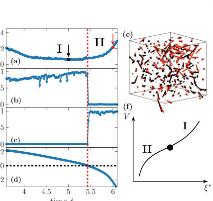
<figcaption class="paper-figure-caption"><b>Fig 3.</b> FIG. 4. Rolling through an inflection point on the energy landscape. The event highlighted by the arrow in Fig. 3a is analyzed in detail here. (a) Mean velocity v(t). (b) Largest overlap O+ between ˆv(t) and the stable instantaneous normal mode xn∗ +. (c) Largest overlap O−between ˆv(t) and the unstable instantaneous normal mode xn∗ −. (d) Eigenvalue λ∗of the instantaneous normal mode xn∗that has the largest overlap with ˆv(t). (e) Visualization of the modes with the largest overlap: xn∗ + (black) and xn∗ −(red), at the marked times (arrows) in (a). (f) Schematic potential energy V as a function of the mode coordinate ξ∗along the direction of xn∗. At the inflection point (the black point),...</figcaption>
</figure>
<figure class="paper-figure-card">
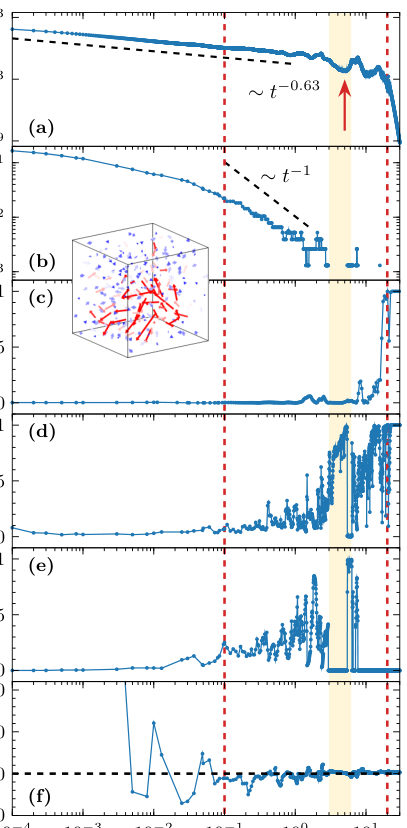
<figcaption class="paper-figure-caption"><b>Fig 4.</b> FIG. 3. Gradient descent dynamics in a typical KALJ sample. All quantities are plotted as functions of t. (a) Mean velocity per particle v(t). (b) Fraction fu(t) of un- stable instantaneous normal modes. (c) Overlap OIS 0 (t) be- tween the normalized velocity field ˆv(t) and the softest vi- brational mode of the inherent structure. (d) Largest overlap O+ between ˆv(t) and stable instantaneous normal modes. (e) Largest overlap O−between ˆv(t) and unstable instantaneous normal modes. (f) Eigenvalue λ∗of the instantaneous nor- mal mode xn∗that has the largest overlap with ˆv(t). The vertical dashed lines mark τIP ≈0.1 and τharm ≈20. The yellow band and the red arrow indicate an...</figcaption>
</figure>
<figure class="paper-figure-card">
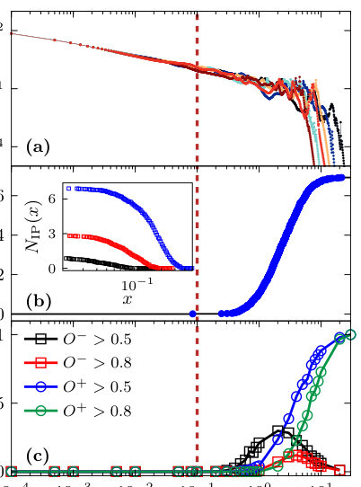
<figcaption class="paper-figure-caption"><b>Fig 5.</b> FIG. 5. Statistics of inflection-point events. (a) Velocity v(t) for 10 independent samples for T = 2. (b) Cumulative number NIP(t) of inflection-point events, averaged over 100 samples. (c) Fraction f ± LO(t) of samples that satisfy O±(t) &gt; Othreshold, where O±(t) is the largest overlap between the nor- malized velocity field ˆv(t) and stable/unstable instantaneous modes (in total, 600 samples are analyzed). The vertical line marks τIP ≈0.1. Inset: NIP(x) for T = 2.0, 0.6, 0.45 (from top to bottom), where x is the distance from the inherent structure; the characteristic distance xIP decreases with de- creasing T.</figcaption>
</figure>
</div>

<p><strong>Summary.</strong> This work establishes that the power-law decay observed during structural glass relaxation is fundamentally due to an effective stiffening potential arising from particle confinement, rather than previously hypothesized mechanisms. By modeling this effect with a minimal cage model, the authors provide a complete physical picture of gradient descent dynamics in these disordered systems.</p>
<p><strong>Why it may be interesting.</strong> While focused on classical glassy dynamics, the concept of energy landscape features (inflection points) governing slow relaxation is highly relevant to understanding quantum tunneling rates or quasi-adiabatic evolution in complex quantum systems.</p>
<details>
<summary>Detailed structure</summary>
<p><strong>Main problem.</strong> The paper addresses the poorly understood phenomenon of slow energy relaxation, characterized by power-law decay, observed in quenched structural glasses.</p>
<p><strong>Main result.</strong> The power-law behavior is shown to emerge from a simple effective stiffening caging potential arising from many-body confinement, rendering complex mechanisms like saddle-point slowdown unnecessary.</p>
<p><strong>Method.</strong> The authors use gradient descent simulations on various glass models and derive analytical predictions based on a phenomenological cage potential.</p>
<p><strong>Model / system.</strong> The study analyzes structural glasses using models like the KALJ model and amorphous silica, focusing on dynamics governed by overdamped Gradient Descent (GD) in the energy landscape.</p>
<p><strong>Key observables.</strong> Power-law decay exponents ($\alpha$ or $eta$) for energy/velocity relaxation ($E(t) \sim t^{-\alpha}$), cage size ($x_c$), and fluctuations around inflection points.</p>
<p><strong>Important parameters / regimes.</strong> The exponent $eta = (\gamma + 1)/(\gamma + 2)$ derived from the stiffening potential; temperature regimes relative to $T_{	ext{onset}}$ or $T_{	ext{def}}$.</p>
<p><strong>Assumptions / limitations.</strong> The dynamics are dominated by descent within individual cages, allowing a minimal single-particle cage model to capture the essential physics.</p>
<p><strong>Figures summary.</strong> Figures illustrate GD trajectories showing energy landscape features like 'speed bumps' at inflection points; one figure compares mean-field spin glass predictions with structural glass behavior.</p>
<p><strong>Paper structure.</strong> The paper first reviews existing theories for slow relaxation, then simulates dynamics in structural glasses to rule out these mechanisms. It proposes the caging potential as the source of power-law decay and validates this using a minimal cage model.</p>
</details>
<details>
<summary>Abstract</summary>
<p>The slow energy relaxation in quenched glasses is a ubiquitous yet poorly understood phenomenon. Despite extensive study, the microscopic origin of the observed power-law decay remains debated, with proposed mechanisms ranging from saddle-point slowdown and marginal stability to coarsening of localized excitations and phonon dynamics. Here, by simulating gradient descent in archetypal structural glass formers, we show that none of these scenarios can account for our data. Instead, the power-law behavior emerges from a remarkably simple caging effect: each particle experiences an effective stiffening potential that arises from many-body confinement and diverges at a characteristic cage size. This mechanism analytically yields the observed power-law decay and is quantitatively reproduced by a minimal single-particle cage model with fixed neighbours, demonstrating that collective relaxation modes are not essential. The dynamics is punctuated by fluctuations as the system rolls through inflection points on the energy landscape, which act as `speed bumps' but do not affect the overall power-law behaviour. In contrast to mean-field spin glass theory, we find no characteristic temperature that separates distinct dynamical regimes; state following within a given glass basin occurs universally for all initial temperatures whenever the system is sufficiently close to the inherent structure. Our results establish a complete physical picture of gradient descent dynamics in typical structural glasses.</p>
</details>
<p><sub><a href="#top">↑ back to top</a></sub></p>

<p><a id="paper-2607.25769"></a></p>
<h3 id="time-reversal-invariant-topological-photonic-alloy"><a href="http://arxiv.org/abs/2607.25769v1">Time-Reversal Invariant Topological Photonic Alloy</a></h3>
<p><strong>Authors:</strong> Feng Ruili, Qu Tiantao, Wu Xianbin, Shi Xiaoxuan, He Mujun, Zhang Lei, Chen Jun<br>
<strong>Type:</strong> theory · <strong>Category:</strong> disordered systems and neural networks · <strong>PDF:</strong> <a href="https://arxiv.org/pdf/2607.25769v1">https://arxiv.org/pdf/2607.25769v1</a><br>
<strong>Analysis basis:</strong> full PDF text, analyzed in chunks
<strong>Topic relevance:</strong> 🔥 <code>analog quantum simulation</code> <strong>4/5</strong> · <code>driven-dissipative phase transition</code> <strong>3/5</strong> · <code>exotic spin models in light-matter</code> <strong>3/5</strong> · <code>methods for driven-dissipative</code> <strong>2/5</strong> · <code>non-equilibrium dynamics</code> <strong>2/5</strong> · <code>correlated cavity matter</code> <strong>1/5</strong> · <code>interference shaping light</code> <strong>1/5</strong> · <code>non-equilibrium universality</code> <strong>1/5</strong></p>
<div class="figure-strip-hint">↔ Scroll figures horizontally</div>
<div class="paper-figures-scroll">
<figure class="paper-figure-card">
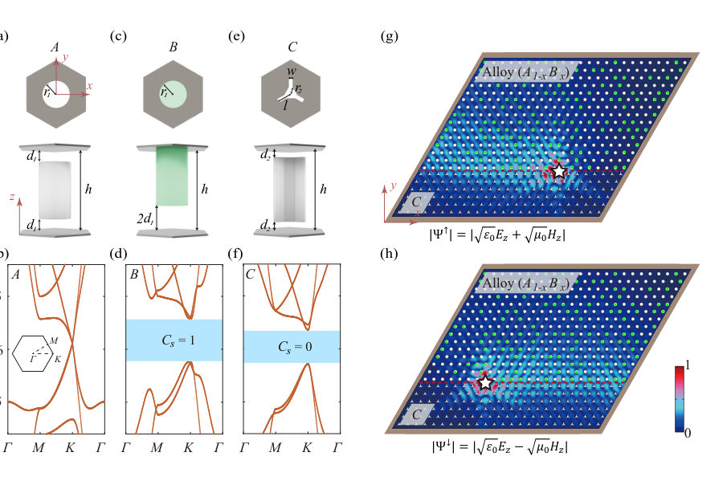
<figcaption class="paper-figure-caption"><b>Fig 1.</b> Figure 1: Photonic quantum spin Hall alloy and the field distributions of its helical edge modes. (a), (c), and (e) Schematics of the 𝐴-type, 𝐵-type, and 𝐶-type components, respectively. The structural parameters are: lattice constant 𝑎= 36.8 mm, height ℎ= 36.8 mm, inner radii 𝑟1 = 6.44 mm and 𝑟2 = 3.65 mm, arm length 𝑙= 7.9 mm, arm width 𝑤= 2.2 mm, and vertical displacements 𝑑1 = 2.76 mm and 𝑑2 = 1.1 mm. (b), (d), and (f) Band structures of photonic crystals composed entirely of unit cells 𝐴, 𝐵, and 𝐶, respectively. The fourfold-degenerate Dirac point in (b) occurs at a frequency of 6.055 GHz. The inset in (b) depicts the first Brillouin zone, and the blue-shaded regions in (d) and (f)...</figcaption>
</figure>
<figure class="paper-figure-card">
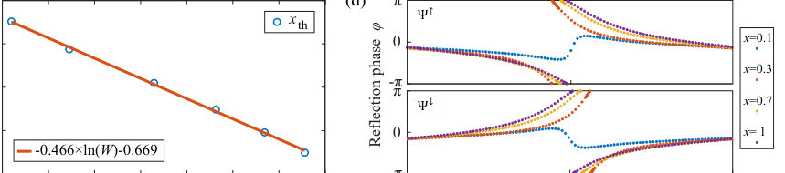
<figcaption class="paper-figure-caption"><b>Fig 2.</b> Figure 2: Topological properties of photonic alloys. (a) Bulk transmission spectrum as a function of the doping concentration 𝑥. Each data point represents the statistical average over 5 random configurations. The red dots indicate the boundary of the topological gap characterized by a spin Chern number of 𝐶𝑠= 1. For each doping concentration, the gap boundary is determined via the reflection phase winding method by analyzing 5 random configurations. Inset: Schematic configuration for the numerical transmission calculation in the 𝐴1−𝑥𝐵𝑥photonic alloy system, where white and green dots denote 𝐴-type and 𝐵-type components, respectively, and the white star represents the excitation dipole...</figcaption>
</figure>
<figure class="paper-figure-card">
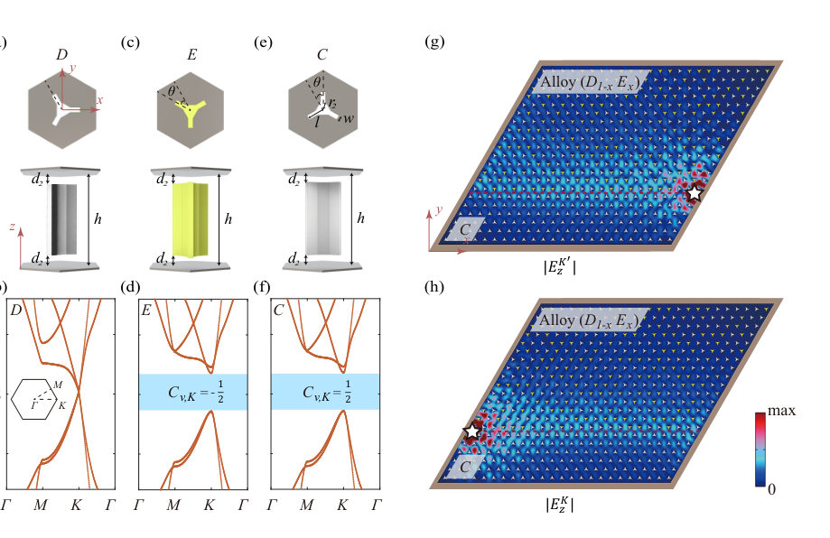
<figcaption class="paper-figure-caption"><b>Fig 3.</b> Figure 3: Topological valley Hall photonic alloy and the field distributions of its valley kink modes. (a), (c), and (e) Schematics of the 𝐷-type, 𝐸-type, and 𝐶-type components, respectively. The 𝐸-type and 𝐶-type configurations are obtained by rotating the internal tripod structure of the 𝐷-type component counterclockwise and clockwise by 𝜃= 30◦. (b), (d), and (f) Band structures of photonic crystals composed entirely of unit cells 𝐷, 𝐸, and 𝐶, respectively. The gapless Dirac point of the 𝐷-type photonic crystal appears at a frequency of 6.02 GHz. The inset in (b) depicts the first Brillouin zone, and the blue-shaded regions in (d) and (f) indicate the bandgaps. (g), (h) Simulated field...</figcaption>
</figure>
<figure class="paper-figure-card">
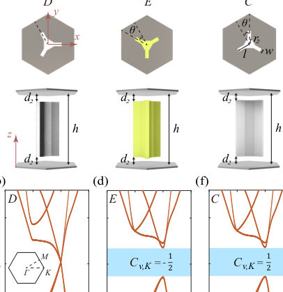
<figcaption class="paper-figure-caption"><b>Fig 4.</b> Figure 4b. At a low doping concentration of 𝑥= 0.1, no edge states emerge near the 6.02 GHz frequency [indi- cated by the white line in Figure 4c], which directly cor- responds to the un-opened gap regime in Figure 4a. As 𝑥 progressively increases, the bulk transmission gap grad- ually widens around the center frequency of 6.02 GHz. Concurrently, as illustrated in Figures 4d and 4e, a contin- uous band gradually emerges around the 𝐾valley within the gap region (bounded by the two solid white lines). With further increases in 𝑥, the gap in Figure 4a broadens substantially, and the edge states in the gap region be- come more evident. These findings demonstrate a clear correlation between the...</figcaption>
</figure>
<figure class="paper-figure-card">
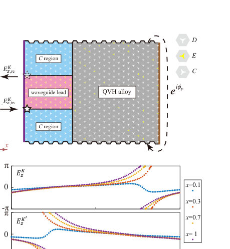
<figcaption class="paper-figure-caption"><b>Fig 5.</b> Figure 5: Topological characterization of the photonic alloy via the reflection-phase winding method. (a) Schematic setup for the reflection phase winding cal- culation, consisting of a square photonic alloy 𝐷1−𝑥𝐸𝑥 domain, a waveguide lead composed of unit cell 𝐸, and an interface constructed from unit cell 𝐶. The applied boundary conditions are the same as those used in the QSH reflection-phase setup. The white solid and white dashed stars mark the respective dipole source locations when probing the 𝐾and 𝐾′ valley modes (e.g., an inci- dent wave 𝐸𝐾 𝑧,in enters the system, and the corresponding reflected mode 𝐸𝐾 𝑧,re is analyzed). (b) Reflection phase 𝜑 as a function of the twisting angle...</figcaption>
</figure>
</div>

<p><strong>Summary.</strong> The authors show that inducing topological phases (QSH and QVH) in photonic crystals does not require breaking spatial symmetry globally. By introducing controlled, local random substitutional disorder into a photonic alloy, they successfully open topological gaps, enabling flexible, on-demand engineering of edge states using only doping tuning.</p>
<p><strong>Why it may be interesting.</strong> This work provides a powerful paradigm shift, showing that engineered disorder can induce complex quantum phenomena like topological edge states without requiring perfect global structural control, which is highly relevant for designing robust photonic devices.</p>
<details>
<summary>Detailed structure</summary>
<p><strong>Main problem.</strong> Conventional methods for inducing topological photonic phases like QSH/QVH require global symmetry breaking, which severely limits device reconfigurability.</p>
<p><strong>Main result.</strong> The study demonstrates that local and minimal symmetry breaking via random substitutional disorder is sufficient to open topological gaps and trigger robust helical edge states and valley kink states.</p>
<p><strong>Method.</strong> Topological characterization is performed using the reflection-phase winding method, analyzing band structures derived from photonic crystal models.</p>
<p><strong>Model / system.</strong> The system is a photonic alloy platform based on random substitutional disorder in a parallel-plate waveguide built on a honeycomb lattice structure.</p>
<p><strong>Key observables.</strong> Topological phases (QSH/QVH), Spin Chern Number ($C_s$), reflection phase winding, and bulk transmission gaps.</p>
<p><strong>Important parameters / regimes.</strong> Doping concentration ($x$), system size (W), and the threshold doping concentration ($x_{th}$) which vanishes in the thermodynamic limit.</p>
<p><strong>Assumptions / limitations.</strong> The analysis assumes that local disorder can effectively mimic global symmetry breaking mechanisms necessary for topological transitions.</p>
<p><strong>Figures summary.</strong> Figures illustrate schematics of unit cells, band structures showing Dirac points, and phase plots ($\varphi$ vs. $\phi_y$) confirming full winding numbers corresponding to non-trivial topology.</p>
<p><strong>Paper structure.</strong> The paper progresses by first establishing the limitation of global symmetry breaking, then demonstrating QSH via local $z$-mirror symmetry breaking (doping), followed by extending the concept to QVH via in-plane inversion symmetry breaking, consistently using topological invariants for characterization.</p>
</details>
<details>
<summary>Abstract</summary>
<p>Conventional approaches generate quantum spin Hall (QSH) and quantum valley Hall (QVH) effects by breaking spatial inversion symmetry across the entire photonic crystal. Consequently, modulating the bulk transmission gaps within these periodic frameworks typically requires global modification of structural parameters throughout the lattice, severely limiting device reconfigurability and post-fabrication adaptability. In this work, we demonstrate that global inversion symmetry breaking is not a prerequisite for inducing topological phases. Instead, local and minimal symmetry breaking is sufficient. Using a photonic alloy platform based on random substitutional disorder in a parallel-plate waveguide, we show that a disorder-driven local breaking of z-direction mirror symmetry and a local breaking of in-plane symmetry are capable of opening topological gaps to trigger QSH and QVH phase transitions, respectively, thereby supporting robust helical edge states and valley kink states. Rigorous topological characterization via the reflection-phase winding method reveals a striking size-dependent scaling behavior in both configurations, where the threshold doping concentration required to trigger the topological phase transition asymptotically vanishes in the thermodynamic limit. By enabling flexible, on-demand bulk gap engineering simply through random doping tuning rather than global structural reconfigurations, this photonic alloy platform not only deepens understanding of disorder induced topological physics but also offers a scalable, highly efficient design strategy for integrated topological optical communications.</p>
</details>
<p><sub><a href="#top">↑ back to top</a></sub></p>

<p><a id="paper-2607.25427"></a></p>
<h3 id="a-general-first-and-second-order-numerical-solver-for-non-markovian-quantum-state-diffusion"><a href="http://arxiv.org/abs/2607.25427v1">A General First- and Second-Order Numerical Solver for Non-Markovian Quantum State Diffusion</a></h3>
<p><strong>Authors:</strong> Zhenning Cai, Quanhui Zhu<br>
<strong>Type:</strong> theory · <strong>Category:</strong> numerical methods · <strong>PDF:</strong> <a href="https://arxiv.org/pdf/2607.25427v1">https://arxiv.org/pdf/2607.25427v1</a><br>
<strong>Analysis basis:</strong> full PDF text, analyzed in chunks
<strong>Topic relevance:</strong> 🔥 <code>methods for driven-dissipative</code> <strong>4/5</strong> · <code>correlated / nonlocal dissipation</code> <strong>3/5</strong> · <code>non-equilibrium dynamics</code> <strong>3/5</strong> · <code>Keldysh / 2PI / non-Gaussian methods</code> <strong>2/5</strong> · <code>driven-dissipative phase transition</code> <strong>2/5</strong> · <code>analog quantum simulation</code> <strong>1/5</strong> · <code>non-equilibrium universality</code> <strong>1/5</strong></p>
<div class="figure-strip-hint">↔ Scroll figures horizontally</div>
<div class="paper-figures-scroll">
<figure class="paper-figure-card">
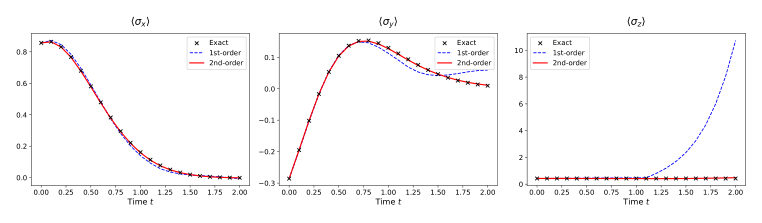
<figcaption class="paper-figure-caption"><b>Fig 1.</b> Fig. 1. Spin dynamics for the exponential bath (Example 5.1). Time evolution of ⟨σx⟩, ⟨σy⟩, and ⟨σz⟩with τ = 0.1. The first-order scheme (blue dashed) and the second-order scheme (red solid) are compared with the exact solution (cross markers).</figcaption>
</figure>
<figure class="paper-figure-card">

<figcaption class="paper-figure-caption"><b>Fig 2.</b> Figure 1 compares the time evolution of ⟨σx⟩, ⟨σy⟩, and ⟨σz⟩for the first- and second-order schemes against the analytical solution. At this time step, the first-order scheme shows visible numerical deviations from the analytical solution, especially in ⟨σz⟩and ⟨σy⟩. In contrast, the second-order scheme agrees well with the reference dynamics for all three observables, showing improved accuracy at the same time step.</figcaption>
</figure>
<figure class="paper-figure-card">
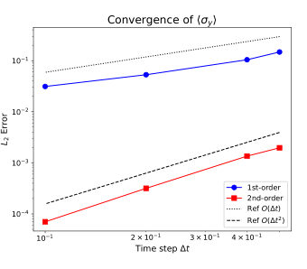
<figcaption class="paper-figure-caption"><b>Fig 3.</b> Fig. 2. Convergence test of ⟨σx⟩and ⟨σy⟩versus time step τ (Example 5.1).</figcaption>
</figure>
<figure class="paper-figure-card">
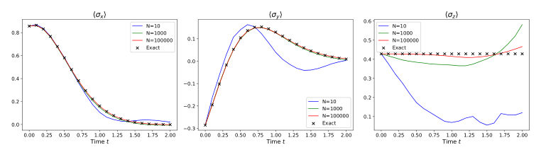
<figcaption class="paper-figure-caption"><b>Fig 4.</b> Fig. 3. Ensemble averages of spin observables calculated with Ntraj = 10, 103, 105 and τ = 0.1 (Example 5.1). The lines show the stochastic averages, and the cross markers denote the analytical reference.</figcaption>
</figure>
<figure class="paper-figure-card">
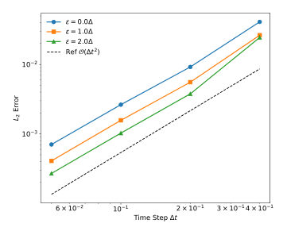
<figcaption class="paper-figure-caption"><b>Fig 5.</b> Fig. 4. The L2 error of ⟨σz⟩t versus the time step τ for Example 5.2 with ϵ ∈{0, ∆, 2∆}. The dashed line indicates the reference slope O(τ2).</figcaption>
</figure>
</div>

<p><strong>Summary.</strong> This paper introduces a general auxiliary-state framework to numerically solve the Non-Markovian Quantum State Diffusion (NMQSD) equation. It analytically decomposes the dynamics into three fundamental structures and develops convergent first- and second-order time-stepping schemes. The resulting methods offer robust tools for simulating open quantum systems with arbitrary memory environments.</p>
<p><strong>Why it may be interesting.</strong> This work provides a highly general and mathematically rigorous computational tool for simulating complex open quantum systems where memory effects are crucial, overcoming limitations of previous specialized solvers.</p>
<details>
<summary>Detailed structure</summary>
<p><strong>Main problem.</strong> The primary challenge is developing a general numerical framework to solve the Non-Markovian Quantum State Diffusion (NMQSD) equation, which is complicated by functional derivatives with respect to the stochastic process.</p>
<p><strong>Main result.</strong> The authors construct and analyze first- and second-order auxiliary-state schemes that provide rigorous error bounds ($\mathcal{O}(	au)$ or $\mathcal{O}(	au^2)$) for approximating the non-Markovian dynamics.</p>
<p><strong>Method.</strong> They derive an analytical solution structure revealing three elementary dynamic components (propagation, insertion, pairing) and implement this using a time-discretization auxiliary-state approach.</p>
<p><strong>Model / system.</strong> The system involves open quantum systems whose reduced density matrix evolution is modeled by the linear NMQSD equation. This formalism describes dynamics influenced by an environment with arbitrary bath correlation functions $\alpha(t, s)$.</p>
<p><strong>Key observables.</strong> Error bounds for the physical state approximation ($\|\psi_{\emptyset}^n - \phi_{\emptyset}^n\|$), and expectation values like $\langle\sigma_x
angle_t$, $\langle\sigma_y
angle_t$, $\langle\sigma_z
angle_t$.</p>
<p><strong>Important parameters / regimes.</strong> Time step ($    au$) and total time ($T$); the structure depends on the bath correlation function $\alpha(t, s)$.</p>
<p><strong>Assumptions / limitations.</strong> The analysis relies on pathwise boundedness of coefficients and uniform integrability of the memory kernel; the first-order scheme explicitly drops contributions from repeated time labels.</p>
<p><strong>Figures summary.</strong> Tables summarize the correspondence between NMQSD forms and diagrammatic notations for Propagation, Pairing, and Insertion. Diagrams illustrate the three elementary transitions in the first-order scheme.</p>
<p><strong>Paper structure.</strong> The paper progresses by deriving an analytical solution structure, decomposing it into three parts, constructing auxiliary-state schemes (first and second order), and finally providing rigorous error analysis proving convergence rates ($\mathcal{O}(	au)$ and $\mathcal{O}(	au^2)$) for these numerical methods.</p>
</details>
<details>
<summary>Abstract</summary>
<p>The numerical simulation of non-Markovian open quantum systems based on the non-Markovian quantum state diffusion (NMQSD) equation is complicated by functional derivatives with respect to the stochastic process. A general numerical framework that directly treats these functional derivatives without relying on prescribed decompositions of the bath correlation function is still lacking. In this work, we derive an analytical solution of the linear NMQSD equation that reveals three elementary structures of the non-Markovian stochastic dynamics: stochastic propagation, functional-derivative insertion, and memory pairing. Based on this structure, we construct a general auxiliary-state framework for arbitrary bath correlation functions. The framework separates the numerical construction into time discretization, memory quadrature, and hierarchy truncation. We then construct first- and second-order schemes and provide diagrammatic transition rules for their explicit implementation. Numerical results verify the expected temporal accuracy and demonstrate the applicability of the proposed methods to different bath correlation functions and multi-level quantum systems.</p>
</details>
<p><sub><a href="#top">↑ back to top</a></sub></p>

<p><a id="paper-2607.25145"></a></p>
<h3 id="agentic-ai-for-scientific-reasoning-in-autonomous-quantum-sensing-experiments"><a href="http://arxiv.org/abs/2607.25145v1">Agentic AI for Scientific Reasoning in Autonomous Quantum Sensing Experiments</a></h3>
<p><strong>Authors:</strong> Takuya Isogawa, Ryotaro Okabe, Nutdech Phadetsuwannukun, Mingda Li, Paola Cappellaro<br>
<strong>Type:</strong> both · <strong>Category:</strong> other · <strong>PDF:</strong> <a href="https://arxiv.org/pdf/2607.25145v1">https://arxiv.org/pdf/2607.25145v1</a><br>
<strong>Analysis basis:</strong> full PDF text, analyzed in chunks
<strong>Topic relevance:</strong> 🔥 <code>QC/QI experiment</code> <strong>4/5</strong> · <code>quantum measurements</code> <strong>3/5</strong> · <code>spintronics-quantum-optics interface</code> <strong>3/5</strong> · <code>non-equilibrium dynamics</code> <strong>2/5</strong> · <code>driven-dissipative phase transition</code> <strong>1/5</strong> · <code>measurement-induced transitions</code> <strong>1/5</strong> · <code>methods for driven-dissipative</code> <strong>1/5</strong> · <code>quantum optics experiment</code> <strong>1/5</strong></p>
<div class="figure-strip-hint">↔ Scroll figures horizontally</div>
<div class="paper-figures-scroll">
<figure class="paper-figure-card">
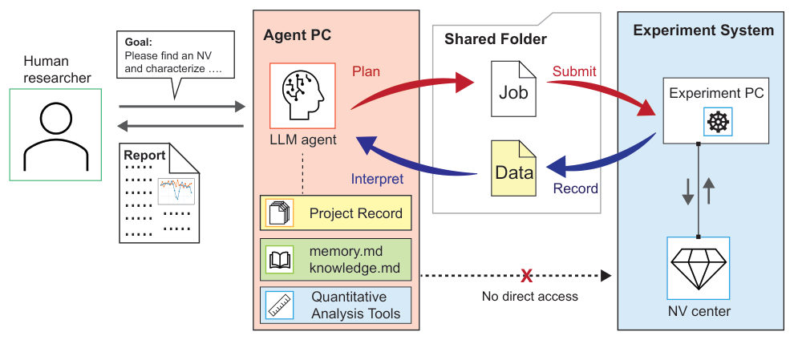
<figcaption class="paper-figure-caption"><b>Fig 1.</b> Figure 1. Overview of the autonomous NV experiment workflow. The human researcher gives an experimental objective to the LLM agent. The agent uses project records, memory and knowledge documents, and quantitative analysis tools on the agent computer. It submits jobs through a shared folder and receives recorded data from the experiment system. On the experiment computer, deterministic software manages the queue, verifies requests and safety conditions, executes accepted jobs, controls the hardware, and records data. The agent has no direct access to the hardware.</figcaption>
</figure>
<figure class="paper-figure-card">
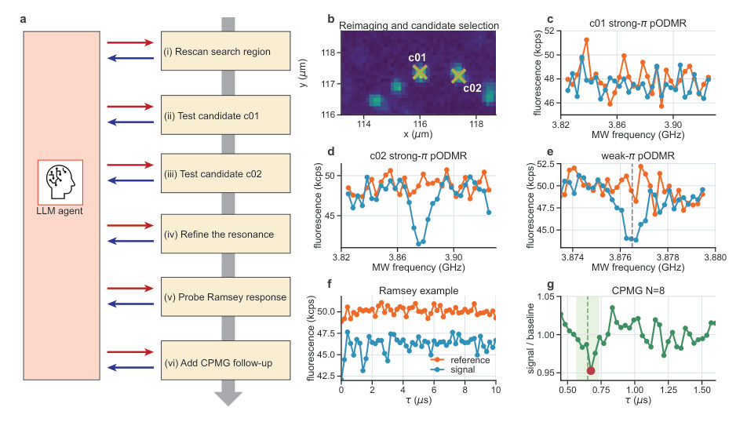
<figcaption class="paper-figure-caption"><b>Fig 2.</b> Figure 2. Autonomous workflow demonstration from the main experiment. Panel (a) shows the main experimental stages as exchanges between the agent and the experiment system. Panel (b) shows the new image scan. Panels (c) and (d) show strong-π pODMR measurements for the rejected and selected candidates. Panel (e) shows the weak-π pODMR resonance calibration. Panel (f) shows one representative Ramsey measurement, and panel (g) shows the autonomous CPMG N = 8 check of the weak 13C-like feature.</figcaption>
</figure>
<figure class="paper-figure-card">
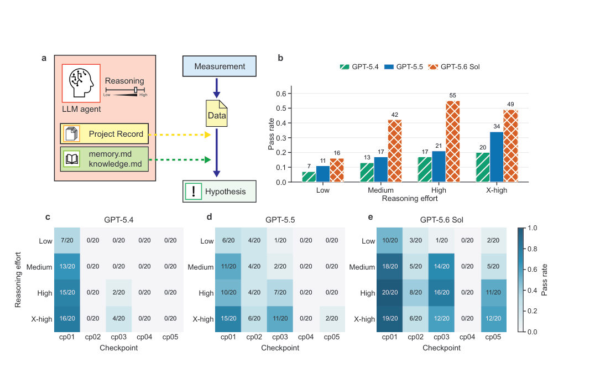
<figcaption class="paper-figure-caption"><b>Fig 3.</b> Figure 3. Ramsey checkpoint benchmark across three models. Panel (a) illustrates hypothesis formation from project records and returned data. Panel (b) shows aggregate pass rates over five checkpoints and twenty replicates per checkpoint for GPT-5.4, GPT-5.5, and GPT-5.6 Sol at each reasoning effort. Labels give passing runs out of 100. Panels (c), (d), and (e) show checkpoint level pass counts for GPT-5.4, GPT-5.5, and GPT-5.6 Sol, respectively. A pass requires the response to connect a residual Ramsey frequency offset to resonance frequency or microwave frequency calibration. Each heat map cell is the number of passing runs out of twenty replicates.</figcaption>
</figure>
<figure class="paper-figure-card">
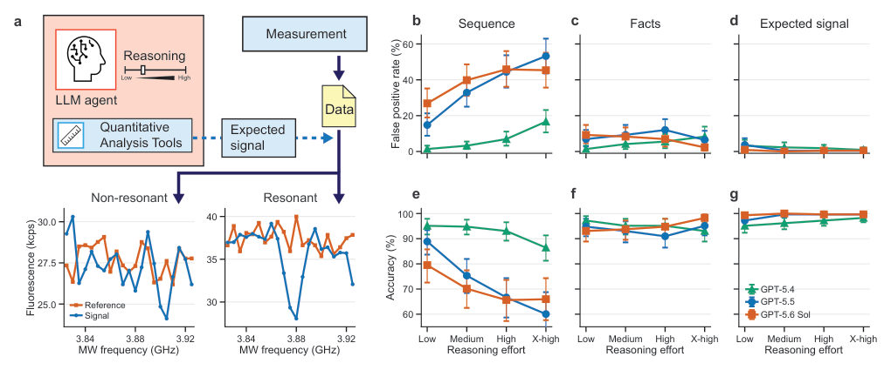
<figcaption class="paper-figure-caption"><b>Fig 4.</b> Figure 4. pODMR benchmark across three models. Panel (a) illustrates how calculations and simulations guide pODMR data evaluation, with representative measurements without and with a resonance. Panels (b), (c), and (d) show the false positive rate for the sequence, domain facts, and expected signal conditions, respectively. Panels (e), (f), and (g) show the corresponding overall classification accuracy. Each point pools three replicates of the same 96 measurements. Error bars show measurement level bootstrap 95% confidence intervals.</figcaption>
</figure>
</div>

<p><strong>Summary.</strong> The paper introduces an agentic AI framework that allows autonomous execution of complex quantum sensing experiments using NV centers. The system uses LLMs to hypothesize next steps and interpret data from measurements like pODMR scans, successfully designing follow-up tests (like CPMG) based on initial weak signals. It establishes a clear division of labor where the AI handles scientific reasoning while deterministic code manages hardware safety.</p>
<p><strong>Why it may be interesting.</strong> This work represents a significant step toward closing the loop in quantum experiments by integrating advanced AI reasoning directly into the experimental control cycle, which is highly relevant for complex open quantum systems characterization.</p>
<details>
<summary>Detailed structure</summary>
<p><strong>Main problem.</strong> Developing autonomous experimental workflows for quantum sensing that can handle complex decision-making, data interpretation, and hypothesis generation beyond routine hardware control.</p>
<p><strong>Main result.</strong> The agent successfully performed an end-to-end workflow—from initial measurement to autonomously designing a follow-up CPMG scan—and benchmarks show that the division of labor between LLM reasoning and deterministic code is crucial for success.</p>
<p><strong>Method.</strong> An agentic AI workflow built around a Large Language Model (LLM) guides autonomous experiments, combining persistent state tracking with quantitative tools to interpret complex quantum measurement data.</p>
<p><strong>Model / system.</strong> The physical system is Nitrogen-Vacancy (NV) centers in diamond, used for sensing magnetic and electric fields via pulsed optically detected magnetic resonance (pODMR) and Ramsey measurements. The AI component uses LLMs (e.g., GPT variants) to reason over the experimental process.</p>
<p><strong>Key observables.</strong> T2* decay time, resonance frequencies, signal depth in pODMR data, and detection of weak frequency components related to nearby ${}^{13}	ext{C}$ coupling.</p>
<p><strong>Important parameters / regimes.</strong> Reasoning effort levels (Low to X-high), contrast depth thresholds ($\geq 0.132$), and specific microwave/Larmor frequencies (e.g., $3.87650 	ext{ GHz}$).</p>
<p><strong>Assumptions / limitations.</strong> The agent's ability to form hypotheses is tested against deterministic hardware control, but the use of specific thresholds in retrospective analysis may not generalize.</p>
<p><strong>Figures summary.</strong> Figures illustrate the sequence of autonomous measurements (Ramsey $
ightarrow$ CPMG) and benchmark comparisons showing model performance across varying reasoning efforts for both Ramsey checkpoint tasks and pODMR data evaluation.</p>
<p><strong>Paper structure.</strong> The paper details an autonomous workflow on NV centers, presents case studies demonstrating hypothesis-driven measurement design (e.g., adding CPMG), and rigorously evaluates the LLM's reasoning capabilities using two distinct offline benchmarks (Ramsey checkpoint and pODMR).</p>
</details>
<details>
<summary>Abstract</summary>
<p>We implement an agentic AI workflow built around a large language model (LLM) agent for autonomous experiments with nitrogen-vacancy (NV) centers in diamond. NV centers are a widely used platform for quantum sensing, and the ability to control many measurements from a computer makes NV experiments a natural setting for autonomous workflows. We make two main contributions. First, we demonstrate an autonomous NV experiment workflow that combines persistent project records, quantitative calculation and data analysis tools, and deterministic experiment control. In one autonomous experiment, the agent selected a single NV center, calibrated its resonant frequency, measured \(T_2^\ast\) with Ramsey measurements, and added a Carr--Purcell--Meiboom--Gill (CPMG) measurement to check a weak feature that could be related to nearby \(^{13}\mathrm{C}\). Second, we introduce two offline benchmarks that evaluate the agent's reasoning separately from laboratory execution. We evaluated both benchmarks with GPT-5.4, GPT-5.5, and GPT-5.6 Sol. In the Ramsey checkpoint benchmark, greater reasoning effort generally improved recognition of a residual resonance calibration offset. By contrast, in the pulsed optically detected magnetic resonance (pODMR) data evaluation benchmark, pulse sequence information alone produced more false positive resonance judgments at higher reasoning effort. Requiring an expected signal calculation kept false positive rates low across all three models and reasoning settings. The results suggest a clear division of labor for autonomous experiments. The agent forms scientific hypotheses and uses quantitative tools to evaluate data, while deterministic code controls the hardware and enforces safety constraints.</p>
</details>
<p><sub><a href="#top">↑ back to top</a></sub></p>

<p><a id="paper-2607.24980"></a></p>
<h3 id="cumulative-suspicion-and-absorption-dynamics-in-an-agent-based-mafia-game"><a href="http://arxiv.org/abs/2607.24980v1">Cumulative suspicion and absorption dynamics in an agent-based Mafia game</a></h3>
<p><strong>Authors:</strong> Eduardo Velasco Stock, Roberto da Silva<br>
<strong>Type:</strong> theory · <strong>Category:</strong> statistical mechanics · <strong>PDF:</strong> <a href="https://arxiv.org/pdf/2607.24980v1">https://arxiv.org/pdf/2607.24980v1</a><br>
<strong>Analysis basis:</strong> full PDF text, analyzed in chunks
<strong>Topic relevance:</strong> 🔥 <code>non-equilibrium universality</code> <strong>4/5</strong> · <code>driven-dissipative phase transition</code> <strong>3/5</strong> · <code>methods for driven-dissipative</code> <strong>3/5</strong> · <code>non-equilibrium dynamics</code> <strong>3/5</strong> · <code>Keldysh / 2PI / non-Gaussian methods</code> <strong>1/5</strong> · <code>analog quantum simulation</code> <strong>1/5</strong> · <code>correlated / nonlocal dissipation</code> <strong>1/5</strong></p>
<div class="figure-strip-hint">↔ Scroll figures horizontally</div>
<div class="paper-figures-scroll">
<figure class="paper-figure-card">
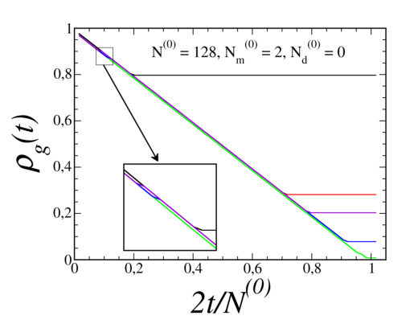
<figcaption class="paper-figure-caption"><b>Fig 1.</b> FIG. 1: The typical evolution of several seeds showing the trivial linear decay of the population of good citizens, ρg(t). We used N (0) = 128, N (0) m = 2, and N (0) d .</figcaption>
</figure>
<figure class="paper-figure-card">
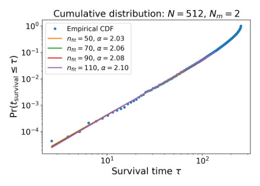
<figcaption class="paper-figure-caption"><b>Fig 2.</b> FIG. 3: Check of the mean-field behavior of the cumula- tive survival-time distribution for N (0) = 512 and N (0) m = 2. The power-law fit performed in the early-time regime, up to τmax = 50, gives α = 2.03, which is very close to the theoret- ical prediction α = Nm = 2.</figcaption>
</figure>
<figure class="paper-figure-card">
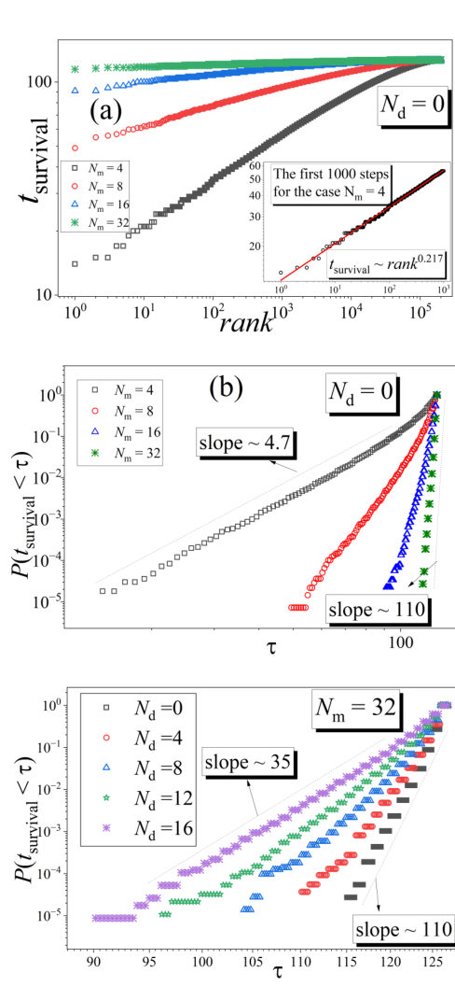
<figcaption class="paper-figure-caption"><b>Fig 3.</b> FIG. 2: Survival times for the mafia. (a) Rank plot of the survival times in the absence of detectives, nd = 0; the inset highlights the power-law behavior observed for a small num- ber of mafia members, Nm = 4. (b) Cumulative distribution of survival times for Nd = 0. (c) Dependence of the survival times on the number of detectives.</figcaption>
</figure>
<figure class="paper-figure-card">
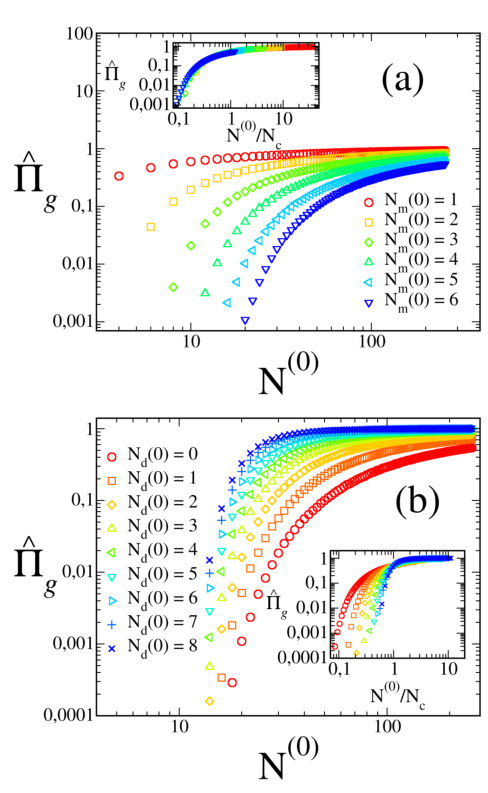
<figcaption class="paper-figure-caption"><b>Fig 4.</b> FIG. 4: Estimated conditional distribution of villagers win- ning as a function of the initial population. In plot (a), we show different initial number of werewolves N (0) m and no de- tectives. The inset plot shows that, by scaling the initial population with 1/Nc, the curves collapse, suggesting a uni- versal behavior. In plot (b), we show different values for the number of detectives, while having N (0) m = 8. In the inset plot, we observe that the same scaling with 1/Nc does not make all curves collapse into a single curve.</figcaption>
</figure>
</div>

<p><strong>Summary.</strong> This work applies concepts from statistical physics to model the Mafia game using an agent-based simulation. It analyzes how accumulated suspicion drives the system toward one of two absorbing states: mafia elimination or numerical parity. The findings reveal universal scaling laws when information is imperfect, but these laws break down significantly when perfect information (detectives) is introduced.</p>
<p><strong>Why it may be interesting.</strong> While not directly quantum, the study of absorbing states, critical phenomena (data collapse), and non-equilibrium dynamics in complex interacting systems provides strong analogies to phase transitions studied in statistical mechanics.</p>
<details>
<summary>Detailed structure</summary>
<p><strong>Main problem.</strong> The paper investigates collective decision-making under concealed affiliations, modeling this using the Mafia game to study history-dependent stochastic processes.</p>
<p><strong>Main result.</strong> It finds that in the absence of perfect information (detectives), winning probabilities exhibit a universal data collapse characterized by a population scale $N_c$.</p>
<p><strong>Method.</strong> The analysis relies on extensive Monte Carlo simulations and mean-field approximations to track absorption statistics over time.</p>
<p><strong>Model / system.</strong> The system is an agent-based model of the Mafia game, where agents accumulate public suspicion scores based on pairwise interactions determined by their hidden roles (Mafia, Detective, Civilian).</p>
<p><strong>Key observables.</strong> Mafia extinction times, winning probabilities for both factions, and the power-law exponent ($\alpha$) governing early-time survival statistics.</p>
<p><strong>Important parameters / regimes.</strong> Population size ($N$), initial mafia size ($N_m$), presence/number of detectives ($N_d$), and time ($   au$).</p>
<p><strong>Assumptions / limitations.</strong> The model provides a minimal stochastic framework, simplifying complex social interactions into quantifiable suspicion updates; the early-time dynamics are approximated by mean-field theory.</p>
<p><strong>Figures summary.</strong> Figures illustrate data collapse for $N_d=0$ when scaling by $N_c$, and show the failure of this collapse when detectives are present, indicating a change in critical behavior.</p>
<p><strong>Paper structure.</strong> The paper moves from defining the game's conflict structure to detailing the agent-based rules for suspicion accumulation, culminating in simulations that test how history-dependence affects macroscopic absorption statistics compared to simpler models.</p>
</details>
<details>
<summary>Abstract</summary>
<p>The Mafia game, also known as Werewolf, describes a competition between a coordinated minority whose identities are concealed and a larger good faction composed primarily of uninformed civilians attempting to identify and eliminate them. We introduce an agent-based formulation in which the daytime decision is not represented by uniform random voting. Instead, randomly paired agents modify player-specific public suspicion scores according to their roles, and one surviving player is subsequently eliminated with probability proportional to their accumulated suspicion. These scores persist throughout the game, producing a history-dependent stochastic process with two competing absorbing outcomes: elimination of the mafia or numerical parity between the mafia and the good faction. We investigate the effects of population size, initial mafia size, and the presence of perfectly informed detectives through extensive Monte Carlo simulations. In the absence of detectives, a random-execution approximation predicts that, in the dilute-mafia and early-time regime, the cumulative probability of mafia extinction behaves as $F(τ)\sim (τ/N)^{N_m}$, in agreement with simulations as $N_m/N$ decreases. The winning-probability curves also exhibit an empirical finite-size crossover characterized by a population scale $N_c$. Rescaling the population by $N_c$ approximately collapses the curves obtained for different initial mafia populations. Perfectly informed detectives substantially shorten mafia-survival times and introduce an additional dependence on population composition for which the same one-parameter rescaling is insufficient. The model provides a minimal connection between microscopic histories of accusation and the macroscopic absorption statistics of hidden-role games.</p>
</details>
<p><sub><a href="#top">↑ back to top</a></sub></p>

<p><a id="paper-2607.25795"></a></p>
<h3 id="efficient-lindbladian-learning-from-constant-time-pauli-responses"><a href="http://arxiv.org/abs/2607.25795v1">Efficient Lindbladian Learning from Constant-Time Pauli Responses</a></h3>
<p><strong>Authors:</strong> Jiaxing Song, Yukun Zhang, Xiao Yuan, Yusen Wu<br>
<strong>Type:</strong> theory · <strong>Category:</strong> other · <strong>PDF:</strong> <a href="https://arxiv.org/pdf/2607.25795v1">https://arxiv.org/pdf/2607.25795v1</a><br>
<strong>Analysis basis:</strong> full PDF text, analyzed in chunks
<strong>Topic relevance:</strong> 🔥 <code>methods for driven-dissipative</code> <strong>4/5</strong> · <code>quantum measurements</code> <strong>3/5</strong> · <code>QC/QI experiment</code> <strong>2/5</strong> · <code>measurement-induced transitions</code> <strong>2/5</strong> · <code>Keldysh / 2PI / non-Gaussian methods</code> <strong>1/5</strong> · <code>analog quantum simulation</code> <strong>1/5</strong> · <code>correlated / nonlocal dissipation</code> <strong>1/5</strong> · <code>driven-dissipative phase transition</code> <strong>1/5</strong> · <code>non-equilibrium dynamics</code> <strong>1/5</strong></p>
<div class="figure-strip-hint">↔ Scroll figures horizontally</div>
<div class="paper-figures-scroll">
<figure class="paper-figure-card">
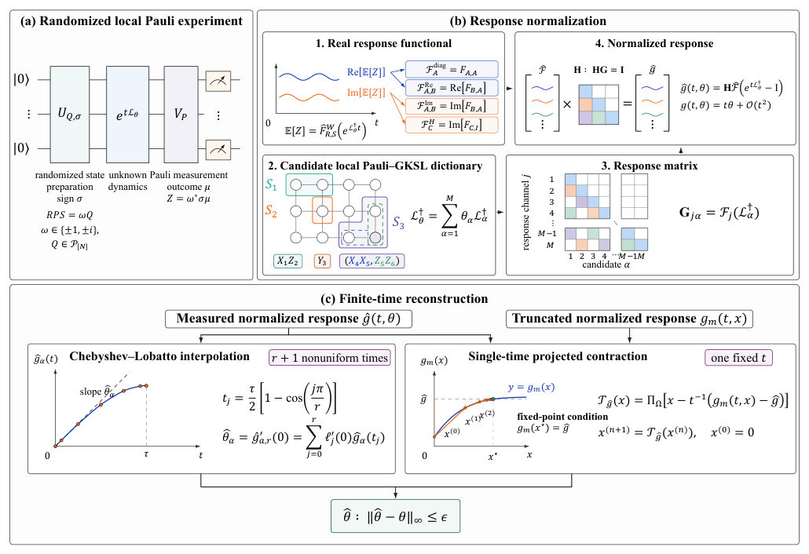
<figcaption class="paper-figure-caption"><b>Fig 1.</b> FIG. 1. Overview of the Lindbladian learning framework. (a) Randomized product-Pauli experiments estimate finite-time raw Pauli response functionals. (b) Response normalization removes the intrinsic mixing between coherent and dissipative generator terms. The measured real response functionals are constructed from raw responses, while the candidate Pauli–GKSL dictionary defines the generator coordinates. At first order in the evolution time, the response matrix G maps Lindbladian coefficients to the slopes of these raw responses at t = 0. Applying H = G−1 removes coherent–dissipative and common- extension mixing and produces normalized responses whose derivatives at the origin equal...</figcaption>
</figure>
</div>

<p><strong>Summary.</strong> This paper presents an advanced framework to learn the generator (Lindbladian) of complex open quantum systems using only short-time local Pauli response measurements. It resolves the inherent difficulty of separating coherent and dissipative dynamics by treating responses as a linear system. The authors propose two efficient, theoretically bounded algorithms—Chebyshev interpolation and single-time contraction—to extract all necessary coupling coefficients from experimental data.</p>
<p><strong>Why it may be interesting.</strong> This work provides a highly systematic and theoretically grounded methodology for extracting fundamental system parameters from limited, noisy experimental data in open quantum systems. The explicit handling of the coherent-dissipative ambiguity is crucial for interpreting measurements in realistic physical platforms like superconducting circuits or trapped ions.</p>
<details>
<summary>Detailed structure</summary>
<p><strong>Main problem.</strong> The core challenge is efficiently learning the generator (Lindbladian) of an open many-body quantum system, which is complicated by dissipative contributions mixed into local Pauli response measurements.</p>
<p><strong>Main result.</strong> The authors develop and analyze two efficient algorithms—Chebyshev–Lobatto interpolation and single-time projected contraction—to separate coherent and dissipative terms and estimate all Lindbladian coefficients from short-time data with provable complexity bounds.</p>
<p><strong>Method.</strong> The approach involves constructing a linear system from raw Pauli responses, inverting it to isolate the contribution of each generator term, and then applying advanced numerical interpolation or iterative projection techniques to extract the time-dependent coefficients.</p>
<p><strong>Model / system.</strong> The study concerns open quantum systems governed by Lindbladian dynamics ($\mathcal{L}^\dagger_	heta$). Learning relies on measuring local Pauli responses from randomized product-Pauli experiments, which provide data related to the system's evolution operator $e^{\mathcal{L}^\dagger t}$.</p>
<p><strong>Key observables.</strong> Local Pauli response functionals $ ext{Tr}[
ho P(t)]$, normalized finite-time responses $g_\alpha(t, 	heta)$, and the unknown Lindbladian coefficients $ heta = (    heta_1, \dots,  heta_M)^T$.</p>
<p><strong>Important parameters / regimes.</strong> Target accuracy ($\epsilon$), number of candidate terms ($M$), evolution time window ($t$), and system locality scales ($\Lambda$).</p>
<p><strong>Assumptions / limitations.</strong> The dictionary of candidate Lindbladian terms must be known; the dissipative part must satisfy bounded locality properties (e.g., bounded dual-interaction-graph degree).</p>
<p><strong>Figures summary.</strong> Figure 1 illustrates a three-stage process: (a) measuring raw responses via Pauli experiments, (b) normalizing these responses by inverting a response matrix ($H=G^{-1}$) to separate coherent/dissipative mixing, and (c) reconstructing the coefficients using interpolation or single-time inversion.</p>
<p><strong>Paper structure.</strong> The paper first establishes the physical problem of Lindbladian learning from local responses. It then details the mathematical framework involving response matrices ($G$ and $H$) to resolve ambiguities. Finally, it presents two distinct algorithmic approaches (Chebyshev interpolation and single-time contraction) alongside rigorous complexity analyses for both measurement shots and classical post-processing.</p>
</details>
<details>
<summary>Abstract</summary>
<p>Learning the generator of an open many-body system is more challenging than Hamiltonian learning: local responses, which can directly reveal coherent interaction terms in closed-system dynamics, may also contain dissipative contributions in open-system dynamics. In this paper, we address this challenge by developing an efficient Lindbladian learning framework for a known local candidate generator dictionary with bounded dissipative support and either bounded dual-interaction-graph degree or bounded unweighted local strength. The framework resolves the coherent-dissipative ambiguity by treating local Pauli responses as a linear system over both types of generator terms. Inverting this response system separates their contributions and makes the individual Lindbladian coefficients accessible from local response data in a fixed short-time window. Within this framework, we develop two efficient learning algorithms: Chebyshev--Lobatto response interpolation, which uses logarithmically many short evolution times and has a post-mean cost linear in $M$, with the stated dependence on $ε$, and Single-time projected response contraction, which uses a single fixed evolution time and globally inverts a truncated response function. Both procedures estimate $M$ candidate coefficients to entrywise accuracy $ε$ using $\widetilde{\mathcal{O}}(M/ε^2)$ sample and classical post-processing complexity. Our theoretical results establish local response inversion as a scalable paradigm for learning, calibrating, and diagnosing complex quantum systems from experimentally accessible short-time data.</p>
</details>
<p><sub><a href="#top">↑ back to top</a></sub></p>

<p><a id="paper-2607.25678"></a></p>
<h3 id="engineering-a-quantum-thermal-diode-with-floquet-driving"><a href="http://arxiv.org/abs/2607.25678v1">Engineering a Quantum Thermal Diode with Floquet Driving</a></h3>
<p><strong>Authors:</strong> Aqsa Rehman, M. Tahir Naseem, Adam Zaman Chaudhry<br>
<strong>Type:</strong> theory · <strong>Category:</strong> statistical mechanics · <strong>PDF:</strong> <a href="https://arxiv.org/pdf/2607.25678v1">https://arxiv.org/pdf/2607.25678v1</a><br>
<strong>Analysis basis:</strong> full PDF text, analyzed in chunks
<strong>Topic relevance:</strong> 🔥 <code>non-equilibrium dynamics</code> <strong>4/5</strong> · <code>driven-dissipative phase transition</code> <strong>3/5</strong> · <code>methods for driven-dissipative</code> <strong>3/5</strong> · <code>non-equilibrium universality</code> <strong>2/5</strong> · <code>Keldysh / 2PI / non-Gaussian methods</code> <strong>1/5</strong> · <code>analog quantum simulation</code> <strong>1/5</strong> · <code>correlated / nonlocal dissipation</code> <strong>1/5</strong></p>
<div class="figure-strip-hint">↔ Scroll figures horizontally</div>
<div class="paper-figures-scroll">
<figure class="paper-figure-card">
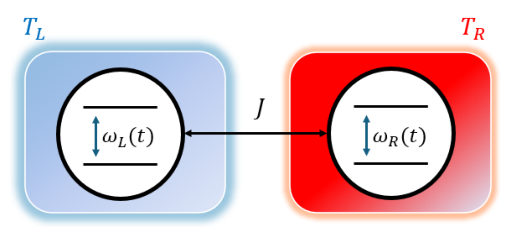
<figcaption class="paper-figure-caption"><b>Fig 1.</b> FIG. 1. Schematic of the Floquet quantum thermal diode. Two qubits with longitudinally modulated transition frequencies ωL(t) and ωR(t) are coupled through an Ising interaction J and connected to independent thermal reservoirs at temperatures TL and TR. The same setup contains the undriven, single-side-driven, and dual-side- driven regimes analyzed in Sec. III.</figcaption>
</figure>
<figure class="paper-figure-card">
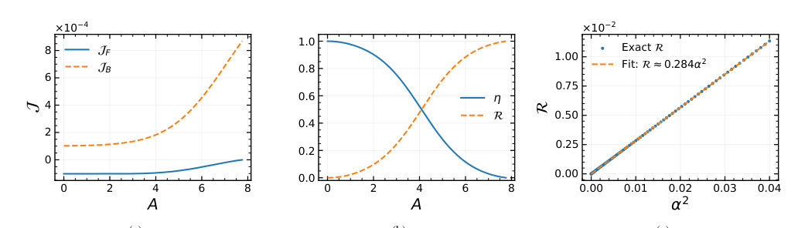
<figcaption class="paper-figure-caption"><b>Fig 2.</b> FIG. 2. Numerical verification of single-side-driven rectification using the sinusoidal left-qubit modulation in Eq. (33) and the flat bare reservoir spectrum in Eq. (B2). (a) Steady-state right-bath currents JF and JB, defined in Eq. (20), versus the drive amplitude A for the forward and reverse thermal biases in Eq. (19). Increasing A selectively suppresses the forward current, which vanishes at the first blocking point, Ablock ≃7.754. (b) Rectification ratio η and rectification coefficient R, defined in Eqs. (22) and (21), respectively. At the forward- current blocking point, η →0 and R →1, demonstrating nearly ideal rectification while the reverse transport branch remains conducting....</figcaption>
</figure>
<figure class="paper-figure-card">
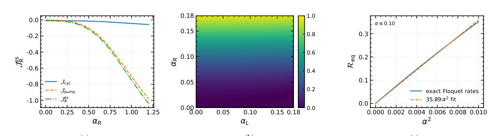
<figcaption class="paper-figure-caption"><b>Fig 3.</b> FIG. 3. Numerical characterization of the dual-side-driven configuration. (a) Exact forward right-bath current decomposed into the interaction- mediated cyclic contribution Jcyc, the right-contact Floquet pumping contribution Jpump, and their sum J ss R , using Eq. (42). The right-drive strength αR is varied at fixed αL = 0.65. (b) Rectification coefficient Rdd in the weak-drive flat-spectrum regime over 0 ≤αL, αR ≤0.18, illustrating the unequal-amplitude scaling in Eq. (49). (c) Equal-amplitude cut αL = αR = α, comparing the numerical Floquet result with the quadratic weak-drive prediction in Eq. (54). Parameters are ω0 = 6, J = 0.85, Ω= 2.12, Th = 4, Tc = 2, and γL = γR = 1, with ¯h = kB...</figcaption>
</figure>
</div>

<p><strong>Summary.</strong> The paper demonstrates how applying periodic external fields (Floquet driving) to a coupled qubit system can engineer a quantum thermal diode. By breaking the symmetry of coupling—specifically through single-side modulation—the authors achieve strong, controllable heat rectification. This establishes contact-selective Floquet dressing as a powerful design tool for managing energy flow in nanoscale quantum devices.</p>
<p><strong>Why it may be interesting.</strong> This work directly addresses non-equilibrium quantum thermodynamics by using time-periodic driving (Floquet engineering) to manipulate energy flow directionality in mesoscopic systems, which is highly relevant to open quantum system dynamics and thermal management.</p>
<details>
<summary>Detailed structure</summary>
<p><strong>Main problem.</strong> The central goal is controlling heat flow at the nanoscale by achieving strong thermal rectification without sacrificing the overall transmitted heat current, a known trade-off in static quantum diodes.</p>
<p><strong>Main result.</strong> Contact-selective Floquet dressing provides a robust design principle to engineer controllable and tunable asymmetry in heat flow through minimal quantum thermal devices.</p>
<p><strong>Method.</strong> The analysis involves deriving and solving a Floquet–LGKS master equation from a microscopic system--bath model, comparing driven dynamics against static and undriven benchmarks.</p>
<p><strong>Model / system.</strong> The system is a minimal quantum thermal diode composed of two longitudinally modulated Ising-coupled qubits, each coupled independently to its own thermal reservoir. The dynamics are governed by time-dependent Hamiltonians and resolved via Floquet theory.</p>
<p><strong>Key observables.</strong> Steady-state heat current ($J_{ss}$), thermal rectification coefficient ($R$), and the blocking condition (suppressing one bias direction while maintaining transport in the other).</p>
<p><strong>Important parameters / regimes.</strong> The modulation amplitude ($\alpha$) is crucial, as rectification scales quadratically with it in the weak-drive regime; single-side vs. dual-side driving configurations are key parameters.</p>
<p><strong>Assumptions / limitations.</strong> The system–bath coupling is assumed to be weak, and approximations like Born, Markov, and Floquet–secular methods are employed for solving the master equation.</p>
<p><strong>Figures summary.</strong> Figure 1 schematically illustrates the setup: two qubits with modulated frequencies coupled by an Ising interaction, connected to independent thermal reservoirs ($T_L, T_R$).</p>
<p><strong>Paper structure.</strong> The paper establishes the physical model and Hamiltonian; it derives the Floquet-LGKS master equation; it analyzes single-side driving to achieve rectification and blocking; finally, it extends the analysis to dual-side driving, showing how pumping contributions must cancel for complete blockade.</p>
</details>
<details>
<summary>Abstract</summary>
<p>Controlling heat flow in small quantum systems is a central goal of quantum thermodynamics and nanoscale transport. A key challenge is to achieve strong thermal rectification without suppressing the transmitted heat current, a tradeoff that often arises in static diode configurations. We establish a Floquet-control mechanism in a minimal quantum thermal diode formed by two longitudinally modulated Ising-coupled qubits, each coupled to an independent thermal reservoir. From a microscopic system--bath model, we derive a Floquet--LGKS master equation that resolves the drive-assisted transition channels. The resonant undriven device with left--right symmetric bath couplings serves as the reciprocal benchmark, while static detuning provides a rectifying reference with reduced heat current. Single-side driving breaks this reciprocal structure by creating a Floquet-dressed contact opposite a purely thermal contact. For this configuration, we obtain a compact steady-state current formula and an exact blocking condition for suppressing one bias direction while retaining finite transport in the opposite direction. In the weak sinusoidal-drive regime, rectification begins quadratically in the modulation amplitude. Dual-side driving adds a Floquet pumping contribution to the interaction-mediated current, so complete blocking requires cancellation of both contributions. These results establish contact-selective Floquet dressing as a design principle for controllable heat-flow asymmetry in minimal quantum thermal devices.</p>
</details>
<p><sub><a href="#top">↑ back to top</a></sub></p>

<p><a id="paper-2607.26019"></a></p>
<h3 id="predicting-the-slow-drift-of-nuclear-spin-noise-in-semiconductor-spin-qubits"><a href="http://arxiv.org/abs/2607.26019v1">Predicting the Slow Drift of Nuclear Spin Noise in Semiconductor Spin Qubits</a></h3>
<p><strong>Authors:</strong> Wayne M. Witzel, Jesse J. Lutz, Matthew D. Grace, Natalie D. Foster, Ryan M. Jock, Dwight R. Luhman<br>
<strong>Type:</strong> both · <strong>Category:</strong> quantum information and computing · <strong>PDF:</strong> <a href="https://arxiv.org/pdf/2607.26019v1">https://arxiv.org/pdf/2607.26019v1</a><br>
<strong>Analysis basis:</strong> full PDF text, analyzed in chunks
<strong>Topic relevance:</strong> 🔥 <code>QC/QI experiment</code> <strong>4/5</strong> · <code>methods for driven-dissipative</code> <strong>3/5</strong> · <code>spintronics-quantum-optics interface</code> <strong>3/5</strong> · <code>quantum measurements</code> <strong>2/5</strong> · <code>Keldysh / 2PI / non-Gaussian methods</code> <strong>1/5</strong> · <code>correlated / nonlocal dissipation</code> <strong>1/5</strong> · <code>driven-dissipative phase transition</code> <strong>1/5</strong></p>
<div class="figure-strip-hint">↔ Scroll figures horizontally</div>
<div class="paper-figures-scroll">
<figure class="paper-figure-card">
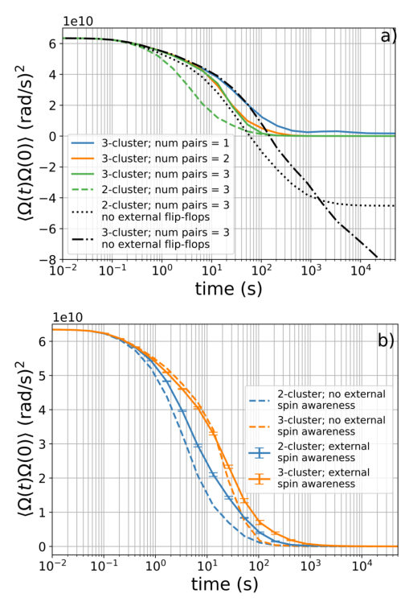
<figcaption class="paper-figure-caption"><b>Fig 1.</b> FIG. 1. Autocorrelation functions illustrating the improved conver- gence behavior when (a) accounting for flip-flops with spins external to each cluster and (b) additionally including external spin awareness (Υ′ = {C ∈Υs.t.∥C∥= 2}). Weutilizefullclusterstateaveraging in all cases; with external spin awareness we use 5 different random spin states (i.e., k = 5 in Eq. 18) with the negligibly small error bars showing the standard error of the mean. The same random nuclear isotope constellation was used throughout, corresponding to 500 ppm 29Si enrichment, and a quantum dot with r0 =10 nm, z0 = 5 nm, and θv = 0 using the model of Eq. 8 and a magnetic field along the [001] crystallographic...</figcaption>
</figure>
<figure class="paper-figure-card">

<figcaption class="paper-figure-caption"><b>Fig 2.</b> FIG. 2. Autocorrelation functions for different magnetic field strengths up to the secular approximation limit for the same random instance of 500 ppm 29Si, quantum dot shape, ton, and toff as in Fig. 1 with the magnetic field along a) [001] and b) [110] crystallographic directions. Solid (dotted) curves are restricted to clusters of size 3 (2). We include external flip-flops and external spin awareness with full cluster state averaging and 5 random spin states as in Fig. 1 (b). The secular approximation appears to work well for magnetic fields at 100 µT or above for 500 ppm 29Si.</figcaption>
</figure>
<figure class="paper-figure-card">

<figcaption class="paper-figure-caption"><b>Fig 3.</b> FIG. 3. Autocorrelation functions for five different random instances of nuclear isotope locations for 500 ppm 29Si enrichment and same quantum dot shape, ton, and toff as Figs 1 and 2, and a magnetic field along the [001] crystallographic direction. We include external flip-flops and external spin awareness with full cluster state averaging and 5 random spin states as in Fig. 1 (b). Offsets of 1e11 (rad/s)2</figcaption>
</figure>
<figure class="paper-figure-card">

<figcaption class="paper-figure-caption"><b>Fig 4.</b> FIG. 4. Block schedules pertinent to Sec. IVB1 for the experiment as well as simulated proxy schedules. The experiment (first row, left) involves a sequence of Ramsey measurements with 53 wait times ranging from 10 ns to 24 µs that are each averaged over 10 shots at each wait time spanning a total duration of 93 ms (outlined in dashed black, detailed in first row, right). This sequence is repeated but interrupted by 373 ms of computer processing time during which the quantum dots are in the effectively unoccupied (4, 0) charge occupation state (long blue block). The Ramsey proxy schedules A (most unoccupied) and B (most occupied), are shown outlined in gray dashed (second row, detailed in...</figcaption>
</figure>
<figure class="paper-figure-card">

<figcaption class="paper-figure-caption"><b>Fig 5.</b> FIG. 5. Comparing effective T ∗ 2 times measured as a function of data collection time from a singlet/triplet qubit [Ref. [50]] against simulation results, related to autocorrelation functions according to Appendix A. a) Examines the autocorrelation functions of simula- tions for a particular random configuration of isotope locations and a particular initial spin state for the proxy models illustrated in Fig. 4 using n-cluster (n-cl) approximations with n = 1, 2, 3 and 2 pairs per spin (applicable beyond 1-cl). The 73Ge is best approximated with the A/B Ramsey sequence proxies. The 29Si contribution is signif- icantly larger, decays more quickly, and is best approximated using the large N...</figcaption>
</figure>
</div>

<p><strong>Summary.</strong> This paper develops an advanced theoretical framework combining Cluster Correlation Expansion with stochastic methods to model the long-term magnetic noise from nuclear spins affecting electron spin qubits. The authors validate this approach against experimental data and show that actively compensating for the measured Overhauser field can dramatically extend qubit coherence times, offering a pathway toward more robust quantum computation in solid-state systems.</p>
<p><strong>Why it may be interesting.</strong> This work directly addresses a fundamental decoherence bottleneck in solid-state quantum computing platforms by providing a quantitative method to mitigate slow environmental noise sources through dynamic control.</p>
<details>
<summary>Detailed structure</summary>
<p><strong>Main problem.</strong> The primary challenge is accurately predicting the slow drift of magnetic noise originating from the nuclear spin bath, which severely limits the coherence time ($T_2^*$) of electron spin qubits in semiconductor quantum dots.</p>
<p><strong>Main result.</strong> The authors demonstrate that by actively compensating for the measured Overhauser field rotation ($\Delta t$), the effective coherence time $ ilde{T}_2^*$ can be significantly enhanced—potentially 10 to 100 times larger than the ergodic $T_2^*$.</p>
<p><strong>Method.</strong> They extend the Cluster Correlation Expansion (CCE) technique by incorporating stochastic treatments of cluster dynamics, combining quantum evolution with classical rate matrices to simulate long-time noise behavior.</p>
<p><strong>Model / system.</strong> The system involves electron spin qubits coupled to a bath of nuclear spins within semiconductor quantum dots. The Hamiltonian includes Zeeman, Fermi contact hyperfine ($H_{hf}$), and dipolar interactions ($\mathbf{D}$).</p>
<p><strong>Key observables.</strong> $T_2^*$ decay time (Ramsey experiments), autocorrelation functions of the Overhauser field, and Power Spectral Densities (PSDs).</p>
<p><strong>Important parameters / regimes.</strong> The simulation relies on modeling periodic electron occupation cycles ($T = t_{	ext{on}} + t_{	ext{off}}$) and quantifying noise drift over long timescales ($\mu$s regime).</p>
<p><strong>Assumptions / limitations.</strong> Key approximations include neglecting fast electronic dynamics relative to slow nuclear bath evolution, assuming low temperatures where phonon decay is negligible, and using the CCE formalism.</p>
<p><strong>Figures summary.</strong> Figures validate the method by showing convergence tests for model dimensions (Fig. 12) and comparing numerical histograms of nearest-neighbor distributions against analytical results (Fig. 14).</p>
<p><strong>Paper structure.</strong> The paper builds from defining the physical noise source to extending the CCE technique for long timescales, validating the methodology against multiple experimental diagnostics ($T_2^*$, autocorrelation), demonstrating back-action effects, and finally quantifying the benefits of active field compensation.</p>
</details>
<details>
<summary>Abstract</summary>
<p>The dynamics of a nuclear spin bath generates magnetic noise that is a key contributor to the decoherence of electron spin qubits in electrostatically-defined quantum dots. In this paper, we extend the cluster correlation expansion (CCE) technique, which has proven useful for predicting solid-state qubit coherence times across various settings but is limited to shorter time scales, to incorporate stochastic treatments of cluster dynamics in order to efficiently predict slow drifting Overhauser fields over longer time scales. This approach combines quantum evolution with classical rate matrices to enable simulation across a wide range of temporal regimes required to simulate, for example, the long-time convergence of the ergodic $T_2^*$ from Ramsey experiments. Our methodology is validated against experimental data from various silicon spin qubit systems, demonstrating a strong agreement between simulation and measurement of Ramsey experiments presented in the form of $T_2^*$ versus averaging time, autocorrelation functions, as well as power spectral densities. Furthermore, we demonstrate significant back-action effects through modeling and experiment; specifically, the dynamics of the nuclear spin bath depends upon the electron spin occupation schedule. Finally, our modeling quantitatively predicts the benefits from compensating for the slow drift of Overhauser fields in qubit operations. Our findings indicate that compensating for an Overhauser rotation measured $Δt$ in the past results in an effective $T_2^*$, which we denote $\tilde{T}_2^*(Δt)$ for clarity, under certain scenarios of interest, can be one or two orders of magnitude larger than the ergodic $T_2^*$ if the Overhauser rotation is re-characterized every 100 milliseconds; that is, $\tilde{T}_2^*(Δt = 100~{\rm ms})$ can be $10$ to $100$ times larger than $T_2^*$.</p>
</details>
<p><sub><a href="#top">↑ back to top</a></sub></p>

<p><a id="paper-2607.26011"></a></p>
<h3 id="krylov-space-memory-cores"><a href="http://arxiv.org/abs/2607.26011v1">Krylov-Space Memory Cores</a></h3>
<p><strong>Authors:</strong> Mohsen Alishahiha, Mohammad Javad Vasli<br>
<strong>Type:</strong> theory · <strong>Category:</strong> statistical mechanics · <strong>PDF:</strong> <a href="https://arxiv.org/pdf/2607.26011v1">https://arxiv.org/pdf/2607.26011v1</a><br>
<strong>Analysis basis:</strong> full PDF text, analyzed in chunks
<strong>Topic relevance:</strong> 🔥 <code>scars &amp; prethermalization</code> <strong>4/5</strong> · <code>non-equilibrium dynamics</code> <strong>3/5</strong> · <code>non-equilibrium universality</code> <strong>2/5</strong> · <code>Keldysh / 2PI / non-Gaussian methods</code> <strong>1/5</strong> · <code>analog quantum simulation</code> <strong>1/5</strong> · <code>driven-dissipative phase transition</code> <strong>1/5</strong> · <code>entanglement &amp; information structure</code> <strong>1/5</strong> · <code>methods for driven-dissipative</code> <strong>1/5</strong></p>
<div class="figure-strip-hint">↔ Scroll figures horizontally</div>
<div class="paper-figures-scroll">
<figure class="paper-figure-card">

<figcaption class="paper-figure-caption"><b>Fig 1.</b> Figure 2. Stationary Krylov occupation profile Πn for the chaotic mixed-field Ising chain. The structured states exhibit strong low-depth peaks together with broader stationary tails. The profile specifies where late-time probability resides; it does not by itself identify the active memory core. The inset extends the comparison to larger Krylov depths.</figcaption>
</figure>
<figure class="paper-figure-card">

<figcaption class="paper-figure-caption"><b>Fig 2.</b> Figure 1. Lanczos coefficients bn for the chaotic mixed- field Ising chain (L = 14, J = 1, g = −1.05, h = 0.5). All states are analyzed in the reflection-even setting of dimension 8256; their exact cyclic dimensions are state dependent and are given in Table I. The similar large-depth envelopes show that the state-selective memory structure is not determined by the overall growth of bn alone.</figcaption>
</figure>
<figure class="paper-figure-card">

<figcaption class="paper-figure-caption"><b>Fig 3.</b> Figure 3. Residual equilibration-fluctuation profile χn for the chaotic mixed-field Ising chain. The states |X+⟩and |Z+⟩carry appreciable low-depth fluctuation weight. The efficiently thermalizing state |Y +⟩and the random controls have much weaker signals whose cumulative weight is dis- tributed over a large fraction of the Krylov chain. The inset shows the larger-depth behavior.</figcaption>
</figure>
<figure class="paper-figure-card">

<figcaption class="paper-figure-caption"><b>Fig 4.</b> Figure 4. Signed Gibbs-deviation profile dn = Πn −Π(Gibbs) n for the chaotic mixed-field Ising chain. The weakly thermaliz- ing state |X+⟩exhibits the largest low-depth Gibbs-reference mismatch. The corresponding mismatch for |Z+⟩is compact but considerably weaker, while |Y +⟩and the random controls remain close to the Gibbs benchmark.</figcaption>
</figure>
<figure class="paper-figure-card">

<figcaption class="paper-figure-caption"><b>Fig 5.</b> Figure 5. Krylov-current fluctuation activity Γn for the chaotic mixed-field Ising chain. The states |X+⟩and |Z+⟩ support strong back-and-forth probability-current fluctua- tions near the Krylov origin. The efficiently thermalizing and random controls have much weaker or broadly distributed ac- tivity. The inset shows the extended-depth tail.</figcaption>
</figure>
</div>

<p><strong>Summary.</strong> The paper introduces Krylov-space memory cores as a stationary framework to locate structured quantum memory within the dynamics of many-body systems. By analyzing residual fluctuations and deviations from equilibrium along the Krylov chain, it distinguishes true, state-selective memory regions from generic thermalization backgrounds. This offers a quantitative way to probe non-equilibrium structure in complex quantum dynamics.</p>
<p><strong>Why it may be interesting.</strong> This work provides a powerful diagnostic tool for identifying non-trivial, localized quantum correlations or 'memory' in complex, thermalizing systems without relying on full time evolution simulations.</p>
<details>
<summary>Detailed structure</summary>
<p><strong>Main problem.</strong> The research aims to characterize anomalous initial-state memory in nonintegrable quantum many-body systems that otherwise tend toward thermalization.</p>
<p><strong>Main result.</strong> Anomalous states develop compact, low-depth 'memory cores' characterized by residual fluctuations and Gibbs mismatch, which are distinct from the broader stationary probability background.</p>
<p><strong>Method.</strong> The analysis maps the system dynamics onto an effective one-dimensional hopping problem on the Krylov subspace generated by the initial state $|\psi_0
angle$.</p>
<p><strong>Model / system.</strong> The study analyzes closed quantum many-body systems governed by a time-independent Hamiltonian $H$, focusing specifically on the structure within the cyclic Krylov subspace.</p>
<p><strong>Key observables.</strong> Stationary occupation profile ($\Pi_n$), residual fluctuation profile ($\chi_n$), Gibbs-deviation profile ($d_n$), and bond-resolved Krylov-current fluctuation activity ($\Gamma_n$).</p>
<p><strong>Important parameters / regimes.</strong> The memory core depth $n_{mc}$ is defined by the spatial concentration of $\chi_n, d_n,$ and $\Gamma_n$, distinguishing it from the full occupation depth $n(q)_\Pi$.</p>
<p><strong>Assumptions / limitations.</strong> Memory is operationally defined as a state-selective residual structure resolved by fluctuations ($\chi_n$), mismatch ($d_n$), or current activity ($\Gamma_n$).</p>
<p><strong>Figures summary.</strong> The notes detail comparisons between the active memory depth ($n_{mc}$) and the full stationary occupation depth, showing $n_{mc}$ is significantly smaller than the latter for tested states.</p>
<p><strong>Paper structure.</strong> The paper develops diagnostics beyond simple probability profiles ($\Pi_n$) by introducing $\chi_n, d_n,$ and $\Gamma_n$. It then applies these tools to various models (PXP chain, Ising state) to quantify the size of the structured memory core ($n_{mc}$) relative to the system's overall dimension.</p>
</details>
<details>
<summary>Abstract</summary>
<p>We introduce Krylov-space memory cores as stationary, depth-resolved structures that reveal how anomalous initial-state memory is organized inside the Krylov space of otherwise thermalizing nonintegrable systems. The stationary occupation profile identifies where late-time probability is concentrated along the Krylov chain, while complementary diagnostics of residual equilibration fluctuations, deviation from the Gibbs reference, and long-time Krylov-current fluctuations determine the physical character of that region. Across weak thermalization, confinement-induced anomalous dynamics, and many-body scarring, anomalous initial states develop compact low-depth memory cores that carry appreciable residual fluctuations, Gibbs mismatch, and persistent current-fluctuation activity. These cores are often embedded within substantially broader stationary occupation halos. Generic reference states, by contrast, do not exhibit a comparable combination of signal strength and spatial compactness. An auxiliary integrable comparison further shows that compact Krylov memory is state selective rather than a generic consequence of integrability. Krylov-space memory cores therefore provide a stationary framework for identifying where structured quantum memory resides and how it remains dynamically encoded.</p>
</details>
<p><sub><a href="#top">↑ back to top</a></sub></p>

<p><a id="paper-2607.25029"></a></p>
<h3 id="quantum-detection-of-cp-violation-in-the-math293math-system-production"><a href="http://arxiv.org/abs/2607.25029v1">Quantum detection of CP violation in the $t\bar{t}$ system: production</a></h3>
<p><strong>Authors:</strong> Priyanka Lamba, Fabio Maltoni, Olimpia Miniati, Eleni Vryonidou<br>
<strong>Type:</strong> theory · <strong>Category:</strong> other · <strong>PDF:</strong> <a href="https://arxiv.org/pdf/2607.25029v1">https://arxiv.org/pdf/2607.25029v1</a><br>
<strong>Analysis basis:</strong> full PDF text, analyzed in chunks
<strong>Topic relevance:</strong> 🔥 <code>entanglement &amp; information structure</code> <strong>4/5</strong> · <code>quantum measurements</code> <strong>2/5</strong> · <code>Keldysh / 2PI / non-Gaussian methods</code> <strong>1/5</strong> · <code>analog quantum simulation</code> <strong>1/5</strong> · <code>correlated / nonlocal dissipation</code> <strong>1/5</strong> · <code>driven-dissipative phase transition</code> <strong>1/5</strong> · <code>methods for driven-dissipative</code> <strong>1/5</strong> · <code>non-equilibrium dynamics</code> <strong>1/5</strong> · <code>non-equilibrium universality</code> <strong>1/5</strong></p>
<div class="figure-strip-hint">↔ Scroll figures horizontally</div>
<div class="paper-figures-scroll">
<figure class="paper-figure-card">

<figcaption class="paper-figure-caption"><b>Fig 1.</b> Figure 3: CP-sensitive observables as functions of the CP-mixing angle δ and the top-quark veloc- ity β. Left: CP-sensitive trace distance, equivalently the norm of the antisymmetric component of the spin-correlation matrix. Right: Magic.</figcaption>
</figure>
<figure class="paper-figure-card">

<figcaption class="paper-figure-caption"><b>Fig 2.</b> Figure 5: SM predictions for the quantum information observables as functions of the scattering angle θ/π and the top-quark velocity β. From left to right, we show geometric discord, concur- rence, and magic.</figcaption>
</figure>
<figure class="paper-figure-card">

<figcaption class="paper-figure-caption"><b>Fig 3.</b> Figure 6: Changes in the quantum information observables induced by the CP-even dipole coef- ficients Re(CtB) (upper row) and Re(CtW ) (lower row), with all other SMEFT coefficients set to zero. From left to right, we show δDL G, δC, and δM2, where δO ≡OSMEFT −OSM.</figcaption>
</figure>
<figure class="paper-figure-card">

<figcaption class="paper-figure-caption"><b>Fig 4.</b> Figure 7: The observables for the benchmark Im(CtB) = 1.5, with all other SMEFT coefficients set to zero. The upper panels show, from left to right, the norm of the top-antitop polarisation difference, the norm of the antisymmetric spin-correlation matrix, and the CP trace distance. The lower panels show the corresponding changes δDL G, δC, and δM2 relative to the SM predictions.</figcaption>
</figure>
<figure class="paper-figure-card">

<figcaption class="paper-figure-caption"><b>Fig 5.</b> Figure 8: The observables for the benchmark Im(CtW ) = 0.1, with all other SMEFT coefficients set to zero. The upper panels show, from left to right, the norm of the top-antitop polarisation difference, the norm of the antisymmetric spin-correlation matrix, and the CP trace distance. The lower panels show the corresponding changes δDL G, δC, and δM2 relative to the SM predictions.</figcaption>
</figure>
</div>

<p><strong>Summary.</strong> This paper develops a theoretical framework to search for CP violation in top-quark pair production by analyzing the spin polarization and correlations of the produced $tar{t}$ state. It uses advanced tools from quantum information theory, such as discord and concurrence, applied to the density matrix derived from SMEFT extensions. The work provides a clean, model-independent diagnostic tool for future collider experiments.</p>
<p><strong>Why it may be interesting.</strong> While focused on particle physics, the methodology—mapping fundamental symmetries (CP) onto quantifiable quantum state properties (discord, concurrence)—is directly transferable to analyzing coherence loss or symmetry breaking in complex many-body quantum systems.</p>
<details>
<summary>Detailed structure</summary>
<p><strong>Main problem.</strong> To investigate how potential new CP-violating top-quark interactions are encoded within the quantum state of a produced $tar{t}$ pair and to identify suitable quantum observables sensitive to this violation.</p>
<p><strong>Main result.</strong> The paper establishes a production-level framework using quantum information measures (like discord and concurrence) that directly probe CP-odd structures in the $tar{t}$ spin density matrix, independent of decay kinematics.</p>
<p><strong>Method.</strong> Analytic derivation of the $tar{t}$ spin density matrix using SMEFT operators, followed by constructing observables based on quantum information theory applied to the state's polarization and correlations.</p>
<p><strong>Model / system.</strong> The system is the production of a top-antitop pair ($tar{t}$) via various hard scattering processes ($   ext{e}^+    ext{e}^-, \gamma\gamma, qar{q}, gg$). The theoretical framework incorporates potential new physics through dimension-six SMEFT operators.</p>
<p><strong>Key observables.</strong> Polarisation asymmetries, the difference between top and antitop polarisation vectors, the anti-symmetric component of the spin-correlation matrix, quantum information measures (discord, concurrence, magic, trace distance).</p>
<p><strong>Important parameters / regimes.</strong> The new physics scale ($\Lambda$) and the Wilson coefficients ($C_i$) associated with CP-violating SMEFT operators.</p>
<p><strong>Assumptions / limitations.</strong> The analysis focuses strictly on the production state density matrix; reconstruction from decay products is deferred to a companion paper. Tree-level calculations are used, neglecting absorptive phases.</p>
<p><strong>Figures summary.</strong> Not specified in the notes, but the structure suggests comparisons across different collider channels and sensitivity plots for various observables.</p>
<p><strong>Paper structure.</strong> The paper systematically introduces CP-violating SMEFT interactions, derives the production density matrix in a common spin basis, identifies characteristic CP-odd structures, constructs corresponding observables, and finally assesses their sensitivity using quantum information measures.</p>
</details>
<details>
<summary>Abstract</summary>
<p>We investigate how possible new CP-violating top-quark interactions are encoded in the quantum state of a produced $t\bar t$ pair. We derive analytic expressions for the production density matrix in several benchmark channels relevant to hadron, lepton and photon colliders. In a common spin basis, we identify two characteristic CP-odd structures in the Fano--Bloch decomposition: a difference between the top and antitop polarisation vectors and an antisymmetric component of the spin-correlation matrix. We construct observables that directly probe these structures and study how quantum information measures, including discord, concurrence, magic and trace distance, respond to CP-even and CP-odd SMEFT contributions. Finally, using current measurements and future collider projections, we assess the sensitivity of these observables to possible new sources of CP violation in top-quark production. This establishes the production-level framework whose experimental reconstruction is developed in a companion paper.</p>
</details>
<p><sub><a href="#top">↑ back to top</a></sub></p>

<p><a id="paper-2607.25783"></a></p>
<h3 id="deterministic-loading-of-molecular-arrays-by-microwave-assisted-collisions"><a href="http://arxiv.org/abs/2607.25783v1">Deterministic loading of molecular arrays by microwave-assisted collisions</a></h3>
<p><strong>Authors:</strong> Etienne F. Walraven, Kang Feng, Jonas Rodewald, Michael R. Tarbutt, Tijs Karman<br>
<strong>Type:</strong> both · <strong>Category:</strong> other · <strong>PDF:</strong> <a href="https://arxiv.org/pdf/2607.25783v1">https://arxiv.org/pdf/2607.25783v1</a><br>
<strong>Analysis basis:</strong> full PDF text, analyzed in chunks
<strong>Topic relevance:</strong> 🔥 <code>analog quantum simulation</code> <strong>4/5</strong> · <code>QC/QI experiment</code> <strong>2/5</strong> · <code>non-equilibrium dynamics</code> <strong>2/5</strong> · <code>Rydberg arrays</code> <strong>1/5</strong> · <code>driven-dissipative phase transition</code> <strong>1/5</strong> · <code>methods for driven-dissipative</code> <strong>1/5</strong></p>
<div class="figure-strip-hint">↔ Scroll figures horizontally</div>
<div class="paper-figures-scroll">
<figure class="paper-figure-card">

<figcaption class="paper-figure-caption"><b>Fig 1.</b> FIG. 1. Sketch of a microwave-assisted collision with short-range repulsion and subsequent deterministic ejection. Molecules in rotational states j + j′ = 1 + 3 experience repulsive rotational van der Waals interactions, reducing short-range loss. Dressing the molecule in j = 3 to j = 2 using microwaves creates resonant dipolar interactions between molecules in j = 1 and the dressed state. In a microwave-dressed picture, as sketched here, the coupling due to the Rabi frequency Ωenables the inelastic process as shown in blue, releasing energy set by the detuning ∆. Processes resulting in residual loss from tunneling to the short range or from transitions to other hyperfine states are not...</figcaption>
</figure>
<figure class="paper-figure-card">

<figcaption class="paper-figure-caption"><b>Fig 2.</b> FIG. 2. CaF hyperfine structure in rotational states (a) j = 0, (b) j = 1, (c) j = 2, and (d) j = 3. Panel (e) shows the hyperfine structure of a pair of molecules in j + j′ = 0 + 1. Here, color and line style encode hyperfine states in j = 0 and j = 1, respectively. The hyperfine intervals are shown in MHz.</figcaption>
</figure>
<figure class="paper-figure-card">

<figcaption class="paper-figure-caption"><b>Fig 3.</b> FIG. 3. Microwave-assisted collision (MWAC) effi- ciency. (a) Efficiency as a function of Rabi frequency Ω and detuning ∆for j + j′ = 0 + 2 with m = m′ = 0. We have assumed a temperature of 5 µK and a microwave field on the transition j = 2 →1. These results do not account for hyperfine structure and tensor Stark shifts. (b) Efficiency for Ω= 1 × 2π MHz, where the blue curve repre- sents the data from (a), as indicated by the blue line. The data points in green are for j + j′ = 1 + 3 in hyperfine states (j, f, mf)+(j′, f ′, m′ f) = (1, 2, 1)+(3, 4, 4), with a microwave field on (j′, f ′, m′ f) = (3, 4, 4) →(2, 3, 3) and tensor Stark shifts set by tweezer depths of ℏ∆/2.</figcaption>
</figure>
<figure class="paper-figure-card">

<figcaption class="paper-figure-caption"><b>Fig 4.</b> FIG. 4. Microwave-dressed CaF interaction poten- tials. (a,b) Molecules are in different rotational states with microwave dressing on (j, f) = (3, 4) →(2, 3). (c) Molecules are in different ro-vibrational states with microwave dressing on (v, j, f) = (0, 2, 2−) →(0, 1, 1−). The blue arrows indicate the MWAC trajectories. The three panels show the scenarios where the post-MWAC states experience (a) dipole-dipole, (b) hyperfine van der Waals and (c) ro-vibrational van der Waals interactions. Only L = 0 and 2 are shown here with (a,b) Mtot = 0 and (c) Mtot = 3.</figcaption>
</figure>
<figure class="paper-figure-card">

<figcaption class="paper-figure-caption"><b>Fig 5.</b> FIG. 5. Loss rates for shelving in ro-vibrational states. Panels (a) and (b) correspond to shelving in (v, j) = (1, 0) and (2, 0), respectively. Dashed (solid) denote f = 0 (f = 1) of the j = 0 molecule, whereas the colors encode f = 1−, 0, 1+, 2 of the j = 1 molecule, see Fig. 2. Loss rates above 10−14 cm3/s are highlighted in red, indicating loss is not suppressed suffi- ciently to completely eliminate background collisional loss.</figcaption>
</figure>
</div>

<p><strong>Summary.</strong> The paper presents a method to deterministically load molecular arrays into optical tweezers using microwave-assisted collisions (MWAC). By utilizing repulsive van der Waals interactions in specific molecular states, the authors suppress lossy collisions and engineer controlled energy release to eject molecules sequentially. This approach paves the way for scalable quantum simulators with predicted filling fractions up to 96%.</p>
<p><strong>Why it may be interesting.</strong> This work directly addresses a critical bottleneck in molecular quantum simulation platforms by providing an engineered mechanism (MWAC) to overcome inherent collisional losses, making scalable array preparation feasible for studying many-body physics.</p>
<details>
<summary>Detailed structure</summary>
<p><strong>Main problem.</strong> The primary challenge is achieving deterministic, high-efficiency loading of molecular arrays trapped in optical tweezer lattices for quantum simulation.</p>
<p><strong>Main result.</strong> By employing microwave-assisted collisions (MWAC) combined with repulsive van der Waals interactions, the authors demonstrate a pathway to achieve filling fractions up to 96%.</p>
<p><strong>Method.</strong> The methodology involves suppressing lossy short-range molecular encounters by shelving molecules and then using controlled energy release from MWACs to deterministically eject one molecule per collision cycle.</p>
<p><strong>Model / system.</strong> The system consists of laser-cooled polar molecules trapped in optical tweezer arrays. The process relies on controlling molecular interactions via microwave dressing of rotational states, enabling engineered collisions analogous to light-assisted atomic loading.</p>
<p><strong>Key observables.</strong> Filling fraction ($\phi_n$), MWAC efficiency, and the final state populations of the loaded molecules.</p>
<p><strong>Important parameters / regimes.</strong> Microwave detuning ($\Delta$), Rabi frequency ($\Omega$), initial molecular states (rotational/vibrational), and trap depth ($V_0$).</p>
<p><strong>Assumptions / limitations.</strong> The schemes rely on currently available laser-cooling techniques for polar molecules; the best performance is achieved using ro-vibrational repulsion, which is limited by the excited state lifetime.</p>
<p><strong>Figures summary.</strong> Figures illustrate the general MWAC process involving repulsive interactions and ejection. Specific figures show the dependence of collision efficiency on $\Omega$ and $\Delta$, and time evolution plots comparing filling fractions for rotational versus ro-vibrational loading schemes.</p>
<p><strong>Paper structure.</strong> The paper progresses by first identifying the limitations of current molecular loading techniques, then proposing the three-step solution (shelving $  o$ MWAC $   o$ Ejection), detailing the underlying physics using coupled-channels calculations, and finally presenting quantitative results showing high filling fractions achievable with ro-vibrational states.</p>
</details>
<details>
<summary>Abstract</summary>
<p>Molecular tweezer arrays offer great prospects for quantum simulation, sensing, and computing, and would benefit from methods that enhance loading efficiency. Whereas light-assisted collisions underpin enhanced loading methods for atomic tweezer arrays, this approach cannot be directly extended to molecular arrays due to collisional loss. We show how this collisional loss can be suppressed by shelving molecules in rotationally or vibrationally excited states, so that a shelved molecule interacts with a newly loaded molecule through a repulsive van der Waals interaction. By introducing microwave assisted collisions, we show how to control the final states and the energy released in a collision between a pair of molecules. Following this controlled collision, one of the two molecules can be ejected, and we explore several strategies for ensuring deterministic ejection. Our schemes rely on currently available techniques for laser-coolable molecules, and we predict achievable filling fractions up to 96%, paving the way for scalable molecular arrays.</p>
</details>
<p><sub><a href="#top">↑ back to top</a></sub></p>

<p><a id="paper-2607.25519"></a></p>
<h3 id="experiments-with-interacting-ultracold-polar-molecules"><a href="http://arxiv.org/abs/2607.25519v1">Experiments with interacting ultracold polar molecules</a></h3>
<p><strong>Authors:</strong> Philip D. Gregory, Jonathan M. Mortlock, Daniel K. Ruttley, Simon L. Cornish<br>
<strong>Type:</strong> experiment · <strong>Category:</strong> other · <strong>PDF:</strong> <a href="https://arxiv.org/pdf/2607.25519v1">https://arxiv.org/pdf/2607.25519v1</a><br>
<strong>Analysis basis:</strong> full PDF text, analyzed in chunks
<strong>Topic relevance:</strong> 🔥 <code>analog quantum simulation</code> <strong>4/5</strong> · <code>QC/QI experiment</code> <strong>2/5</strong> · <code>correlated cavity matter</code> <strong>1/5</strong> · <code>driven-dissipative phase transition</code> <strong>1/5</strong> · <code>entanglement &amp; information structure</code> <strong>1/5</strong> · <code>non-equilibrium dynamics</code> <strong>1/5</strong> · <code>quantum optics experiment</code> <strong>1/5</strong></p>
<div class="figure-strip-hint">↔ Scroll figures horizontally</div>
<div class="paper-figures-scroll">
<figure class="paper-figure-card">

<figcaption class="paper-figure-caption"><b>Fig 1.</b> Fig. 1 Zeeman structure of states with 𝑁= 0, 1 for (a) 87Rb133Cs, (b) 40K87Rb, (c) 23Na87Rb, (d) 23Na40K. In each of the lower panels there is one line coloured black; this is the 𝑁= 0 state that becomes the hyperfine ground state at large magnetic field. In the upper panels, the colouring of the states is codified by the relative transition strength from the hyperfine ground state. Source: (a, b, c, d) adapted from Ref. [92].</figcaption>
</figure>
<figure class="paper-figure-card">

<figcaption class="paper-figure-caption"><b>Fig 2.</b> Fig. 3 Direct measurements of the lifetime of collision complexes for (a) KRb+KRb and (b) KRb+Rb. In each case, the 𝑥axis indicates a time delay between the off-resonant trap light being either (a) switched off completely or (b) suddenly reduced to a lower level and the detection of the complexes via an ionising ultraviolet pulse. For (a), the inset shows the same results but over a larger range of UV delay times. For (b), the level to which the trap light is reduced is indicated by the symbols. Source: (a) is adapted from Ref. [111], (b) is adapted from Ref. [116].</figcaption>
</figure>
<figure class="paper-figure-card">

<figcaption class="paper-figure-caption"><b>Fig 3.</b> Fig. 4 Feshbach resonances observed in atom-molecule collisions between NaK and K. (a) In- creased loss of molecules is observed in the experiments as a function of the magnetic field indicating the location of an interspecies Feshbach resonance. Each panel shows results across a different range of magnetic fields. (b) Two possible explanations (red and blue) for the positions of Feshbach resonances observed below 35 G. The black solid lines indicate the energy of the free atom-molecule pair, while the red and blue lines show the energies from two different sets of possible NaK2 bound states. Where the bound states are equal to the free pair, a Feshbach resonance may occur. Source: (a, b)...</figcaption>
</figure>
<figure class="paper-figure-card">

<figcaption class="paper-figure-caption"><b>Fig 4.</b> Fig. 5 Collisional shielding using circularly polarised microwaves, demonstrated between a pair of CaF molecules in the same optical tweezer trap. (a) The presence of the microwaves forms two dressed states that diverge as a function of the intermolecular separation due to the dipole-dipole interaction. Coupling to the upper state results in a repulsive interaction that prevents the molecules from reaching short range and thus suppressing collisional loss, while coupling to the lower state enhances the loss. (b) The lifetime of the molecule-pair in the ground state to those prepared in either of the dressed states. Source: (a, b) are adapted from Ref. [143].</figcaption>
</figure>
<figure class="paper-figure-card">

<figcaption class="paper-figure-caption"><b>Fig 5.</b> Fig. 6 Quantum-degenerate Fermi gases of (a) KRb, (b) NaK and Bose-Einstein condensates of (c) NaCs, (d) NaRb realised in experiments. For each, the optical density extracted from absorption images (shown inset) is plotted as a function of position. For (c,d), there are two lines that show fits to the condensate and thermal fractions of the sample, respectively. Source: (a) is adapted from Ref. [155], (b) is adapted from Ref. [144], (c) is adapted from Ref. [151], (d) is adapted from Ref. [152].</figcaption>
</figure>
</div>

<p><strong>Summary.</strong> This review surveys the experimental progress in harnessing ultracold polar molecules as a platform for quantum science. It details advanced techniques to achieve full quantum control, focusing specifically on managing long-range dipole-dipole interactions and minimizing loss during molecular collisions. The work highlights how these controlled systems can be used for complex quantum simulations.</p>
<p><strong>Why it may be interesting.</strong> This work sits at the intersection of AMO physics and quantum simulation. The detailed discussion on controlling dipole-dipole interactions via magic wavelengths/angles is crucial for realizing coherent many-body dynamics in molecular systems.</p>
<details>
<summary>Detailed structure</summary>
<p><strong>Main problem.</strong> Reviewing experimental advances required to achieve full quantum control over ultracold polar molecules for applications like quantum simulation.</p>
<p><strong>Main result.</strong> The review details successful techniques for controlling molecular collisions, engineering long-range dipolar interactions, and achieving precise internal state manipulation in these systems.</p>
<p><strong>Method.</strong> The paper reviews various experimental methods, including magnetoassociation, STIRAP transfer, and using optical lattices/tweezers to control interactions.</p>
<p><strong>Model / system.</strong> The system is ultracold polar diatomic molecules (e.g., bialkali species) possessing rich internal structure and long-range dipole-dipole interactions ($H_{dd}$). Control relies on manipulating rotational and hyperfine states via microwave or optical fields.</p>
<p><strong>Key observables.</strong> Relative transition strengths, differential light shifts, collision loss rates, and the ability to prepare molecules in specific quantum superpositions.</p>
<p><strong>Important parameters / regimes.</strong> Dipolar interaction strength ($V_{dd}$), magnetic field strength, laser detuning/wavelength (for magic angles/wavelengths), and temperature regime (ultracold).</p>
<p><strong>Assumptions / limitations.</strong> The review assumes the applicability of models like the rigid-rotor approximation and relies on external fields to induce or control dipole moments.</p>
<p><strong>Figures summary.</strong> Figures illustrate Zeeman structures for bialkali molecules showing relative transition strengths versus magnetic field, and potentially show energy level diagrams related to molecular structure.</p>
<p><strong>Paper structure.</strong> The paper is structured as a review, focusing sequentially on three key areas: 1) Control of ultracold molecular collisions, 2) Engineering dipolar interactions using external fields/lattices, and 3) General internal state control mechanisms.</p>
</details>
<details>
<summary>Abstract</summary>
<p>Ultracold polar molecules have emerged as an exciting platform for experiments in quantum science, with many proposed applications seeking to leverage the existence of long-range dipolar interactions and the rich internal structure of long-lived states. However, the complexity of molecules also presents many experimental challenges. In this chapter, we review the experimental advances over the past two decades that have brought ultracold molecules under full quantum control. We focus on three key topics: control of ultracold molecular collisions, engineering dipolar interactions and nascent quantum simulations in optical lattices.</p>
</details>
<p><sub><a href="#top">↑ back to top</a></sub></p>

<p><a id="paper-2607.25779"></a></p>
<h3 id="exponential-de-finetti-theorems-for-fermionic-gaussian-states"><a href="http://arxiv.org/abs/2607.25779v1">Exponential de Finetti Theorems for Fermionic Gaussian States</a></h3>
<p><strong>Authors:</strong> Jędrzej Burkat, Michał Studziński, Sergii Strelchuk<br>
<strong>Type:</strong> theory · <strong>Category:</strong> statistical mechanics · <strong>PDF:</strong> <a href="https://arxiv.org/pdf/2607.25779v1">https://arxiv.org/pdf/2607.25779v1</a><br>
<strong>Analysis basis:</strong> full PDF text, analyzed in chunks
<strong>Topic relevance:</strong> 🔥 <code>entanglement &amp; information structure</code> <strong>4/5</strong> · <code>Keldysh / 2PI / non-Gaussian methods</code> <strong>2/5</strong> · <code>analog quantum simulation</code> <strong>1/5</strong> · <code>correlated / nonlocal dissipation</code> <strong>1/5</strong> · <code>driven-dissipative phase transition</code> <strong>1/5</strong> · <code>methods for driven-dissipative</code> <strong>1/5</strong> · <code>non-equilibrium dynamics</code> <strong>1/5</strong></p>
<div class="figure-strip-hint">↔ Scroll figures horizontally</div>
<div class="paper-figures-scroll">
<figure class="paper-figure-card">

<figcaption class="paper-figure-caption"><b>Fig 1.</b> FIG. 1. Numerical Comparison of Error Bounds. Each subfigure plots upper bounds for δ in Theorem 1 against r. ‘Full Expression’ (black line) denotes Equation (1), which is the most accurate form. ‘Rising Factorial’ and ‘λr Form’ (red and orange lines) denote the two simplified bounds in Equation (2). ‘Ratio Form’ and ‘Renner Style’ (blue and teal lines) denote Equations (3) and (4). For both pairs, dotted lines show simplified expressions for the bounds plotted as dashed lines. Columns display results for different values of n per subsystem H, doubled between each column as prescribed by the purification in Theorem 2. Rows display different regimes: k &gt; m where the partial trace retains...</figcaption>
</figure>
</div>

<p><strong>Summary.</strong> This theoretical paper proves an exponential de Finetti theorem tailored for fermionic Gaussian states, significantly improving upon previous bounds. It extends the scope from highly symmetric states to all Gaussian-invariant states by utilizing advanced techniques involving replica symmetry and algebraic identities. The result provides a quantitative measure of how close complex quantum correlations are to simple product states.</p>
<p><strong>Why it may be interesting.</strong> This work provides powerful tools for characterizing entanglement structure in many-body quantum systems by quantifying how close a complex correlated state is to a simple product (i.i.d.) state, which is crucial for understanding thermalization and local measurements in condensed matter physics.</p>
<details>
<summary>Detailed structure</summary>
<p><strong>Main problem.</strong> The paper aims to prove an exponential variant of the de Finetti theorem for free-fermionic Gaussian states, extending previous results from Gaussian-symmetric to the broader class of Gaussian-invariant states.</p>
<p><strong>Main result.</strong> They establish that reduced states of Gaussian-invariant fermionic Gaussian states can be approximated by convex combinations of almost-i.i.d. states with an error bound decaying exponentially or super-exponentially in system parameters, achieving polylogarithmic dimensional penalties.</p>
<p><strong>Method.</strong> The proof combines advanced techniques from quantum information theory, including using Chernoff bounds on overlap variables and establishing algebraic equivalences between different mathematical formulations of the de Finetti theorem via commutation relations involving bridge operators.</p>
<p><strong>Model / system.</strong> The system under study is fermionic Gaussian states defined on a lattice or set of qubits (Hilbert space $H \cong (\mathbb{C}^2)^{\otimes n}$), analyzed through replicas ($k$) and partial traces ($    ext{Tr}_m$). The theory focuses on symmetries like Gaussian-symmetric and Gaussian-invariant states.</p>
<p><strong>Key observables.</strong> The primary observable is the error bound $\delta$ quantifying how well a reduced state approximates an i.i.d. mixture; other key elements include overlap variables ($Q$) and bridge operators ($\Lambda_{ab}$).</p>
<p><strong>Important parameters / regimes.</strong> Key parameters include the number of replicas ($k, m$), the system size ($n$), and the approximation parameter $r$. The analysis highlights different scaling regimes based on the relative sizes of $k$ and $m$.</p>
<p><strong>Assumptions / limitations.</strong> The results are derived for free-fermionic Gaussian states and rely heavily on specific algebraic properties involving Majorana operators and parity/pair-parity operators.</p>
<p><strong>Figures summary.</strong> Figure 1 numerically compares upper bounds for the error $\delta$ using different mathematical forms (Full Expression, Rising Factorial, Ratio Form) across various regimes of system parameters ($k>m$, $k=m$, $k<m$).</p>
<p><strong>Paper structure.</strong> The paper progresses by first establishing the exponential bound for Gaussian-symmetric states (Theorem 1), then extending this to the broader class of Gaussian-invariant states via purification theorems, and finally proving the equivalence between different mathematical formulations of the de Finetti theorem using algebraic identities.</p>
</details>
<details>
<summary>Abstract</summary>
<p>We prove an exponential variant of the Gaussian de Finetti theorem: the subsystems of permutation-invariant, free-fermionic Gaussian states are well-approximated by convex combinations of almost-i.i.d. states that are Gaussian on subsets of their parts. Our result provides an error bound between the original state and its approximants that decays exponentially in the number of unconstrained parts, becoming super-exponential when the subsystem under consideration is small. The dimensional penalty of our bound is polylogarithmic in the local Hilbert space dimension, an exponential improvement over the standard de Finetti theorem of [Nat. Phys. 3, 645-649]. In the fully i.i.d. limit, our bound recovers the Gaussian de Finetti theorem of [arXiv:2603.12392]. Previous works considered Gaussian-symmetric states, which are supported on the trivial irrep of the tensor matchgate representation. We extend these to a broader class of Gaussian-invariant states containing, for example, i.i.d. copies of single-replica mixed Gaussian states. We show that Gaussian-invariant states are precisely the partial traces of Gaussian-symmetric states on locally enlarged replicas, and always admit a purification into a larger Gaussian-symmetric state. This extends de Finetti theorems to the full set of Gaussian-invariant states, with only a polynomial overhead in the dimensional penalty of the error bound.</p>
</details>
<p><sub><a href="#top">↑ back to top</a></sub></p>

<p><a id="paper-2607.25777"></a></p>
<h3 id="tunable-state-dependent-interactions-in-collisionally-stable-mixtures-of-polar-molecules"><a href="http://arxiv.org/abs/2607.25777v1">Tunable state-dependent interactions in collisionally stable mixtures of polar molecules</a></h3>
<p><strong>Authors:</strong> Hubert J. Jóźwiak, Hanwei Yang, Eugen Dizer, Arthur Christianen, Tijs Karman<br>
<strong>Type:</strong> theory · <strong>Category:</strong> other · <strong>PDF:</strong> <a href="https://arxiv.org/pdf/2607.25777v1">https://arxiv.org/pdf/2607.25777v1</a><br>
<strong>Analysis basis:</strong> full PDF text, analyzed in chunks
<strong>Topic relevance:</strong> 🔥 <code>analog quantum simulation</code> <strong>4/5</strong> · <code>exotic spin models in light-matter</code> <strong>3/5</strong> · <code>Keldysh / 2PI / non-Gaussian methods</code> <strong>1/5</strong> · <code>correlated / nonlocal dissipation</code> <strong>1/5</strong> · <code>driven-dissipative phase transition</code> <strong>1/5</strong> · <code>methods for driven-dissipative</code> <strong>1/5</strong></p>
<div class="figure-strip-hint">↔ Scroll figures horizontally</div>
<div class="paper-figures-scroll">
<figure class="paper-figure-card">

<figcaption class="paper-figure-caption"><b>Fig 1.</b> FIG. 1. State-dependent microwave shielding and tun- able dipolar interactions. (a) Energy-level diagram for the v = 0 (black) and v = 1 (red) vibrational states. Mi- crowave fields (π, σ) couple the j = 0 and j = 1 rotational states. Rotation-vibration coupling effectively increases the microwave detunings (∆σ,π) for the v = 1 state by 2αe. (b) The resulting effective dipolar interactions as a function of ∆π. The 2αe difference shifts the v = 1 (red) curve relative to the v = 0 curve (black), enabling state-dependent dipolar interactions between the ground- and excited-state molecules. The cartoons illustrate the anisotropy of these interactions and the physical effect of the sign reversal...</figcaption>
</figure>
<figure class="paper-figure-card">

<figcaption class="paper-figure-caption"><b>Fig 2.</b> FIG. 2. Two-body loss rates for bosonic NaCs, derived from the complex s-wave scattering length (see Appendix A). The rates are computed at the optimal overall field strength below Ωtot = 50 × 2π MHz for a π-dominated field configu- ration (Ωσ/Ωπ = 1/4). Panels (a–c) show the optimized loss rates for collisions between identical ground (|0⟩+|0⟩), distin- guishable (|0⟩+|1⟩), and identical excited (|1⟩+|1⟩) molecules, respectively. Panel (d) displays the maximum of these three loss rates, max(kvv′). The white regions are excluded due to the occurrence of field-linked bound states.</figcaption>
</figure>
<figure class="paper-figure-card">

<figcaption class="paper-figure-caption"><b>Fig 3.</b> FIG. 4. Accessible range of the density-density (V ), density-spin (W) and Ising interactions (Jz, see the color scale) for arbitrary microwave configuration where the maxi- mum loss rate, max(kvv′), remains below 10−12 cm3/s.</figcaption>
</figure>
<figure class="paper-figure-card">

<figcaption class="paper-figure-caption"><b>Fig 4.</b> FIG. 3. The maximum two-body loss rate for various Rabi frequency ratios. The overall field strength is capped at Ωtot = 50 × 2π MHz. Marked in bold are the collisionally stable regions that we investigate in more detail in Fig. 5.</figcaption>
</figure>
<figure class="paper-figure-card">

<figcaption class="paper-figure-caption"><b>Fig 5.</b> FIG. 5. Tunability of the model parameters along col- lisionally stable paths. (a, b) Ising (Jz), density-density (V ), and density-spin (W) interactions along the two trajec- tories shown in Fig. 3(b) and Fig. 3(c), respectively. The right vertical axes indicate the interaction strengths scaled by the interparticle distance d ≈4000 a0, corresponding to a bulk gas density of 1014 cm−3. (c) The corresponding two-body loss rates along the trajectory shown in panel (b). The loss rates for the trajectory in panel (a) exhibit similar suppression below 10−13 cm3/s (not shown). The overall field strength is fixed at Ωtot = 20 × 2π MHz.</figcaption>
</figure>
</div>

<p><strong>Summary.</strong> The authors demonstrate a method to engineer strong, controllable dipolar interactions between polar molecules by utilizing microwave dressing on their vibrational states. This technique achieves this tunability while simultaneously suppressing inelastic collisional losses across all relevant collision channels. The result opens a robust platform for simulating complex quantum magnetic and correlated electron models in the ultracold regime.</p>
<p><strong>Why it may be interesting.</strong> This work provides a highly controlled mechanism for generating tunable, long-range anisotropic interactions in ultracold quantum gases, directly enabling simulations of complex models like extended Hubbard and $t$-$J_z$ models using molecular platforms.</p>
<details>
<summary>Detailed structure</summary>
<p><strong>Main problem.</strong> To realize a unified platform for quantum simulation that provides strong, directly tunable state-dependent interactions while maintaining collisional stability in ultracold polar molecules.</p>
<p><strong>Main result.</strong> The proposed microwave dressing scheme successfully generates highly tunable dipolar Ising ($J_z$), density-density ($V$), and spin-density ($W$) interactions while suppressing two-body losses below $10^{-13} 	ext{ cm}^3/	ext{s}$.</p>
<p><strong>Method.</strong> Theoretical modeling using coupled-channel quantum scattering calculations to determine loss rates, combined with microwave dressing theory to engineer state-dependent long-range dipolar couplings.</p>
<p><strong>Model / system.</strong> The system involves a mixture of polar molecules whose pseudo-spin is encoded in the vibrational ground ($v=0$) and first excited ($v=1$) states. Microwave fields are used to induce controlled, anisotropic interactions between these molecular states.</p>
<p><strong>Key observables.</strong> Tunable interaction strengths ($J_z, V, W$), two-body collisional loss rates ($\max(k_{vv'})$), and scattering lengths ($\alpha_{vv'}^s$).</p>
<p><strong>Important parameters / regimes.</strong> Microwave detuning ratios ($\Delta/\Omega$) and Rabi frequency ratios ($\Omega_\sigma/\Omega_\pi$); the interaction length scales relative to interparticle spacing ($d$).</p>
<p><strong>Assumptions / limitations.</strong> The initial analysis focuses on the $v=0$ and $v=1$ subspace, though extension to higher vibrational manifolds is suggested.</p>
<p><strong>Figures summary.</strong> Figures illustrate energy level diagrams (Fig. 1), map out stable regions in loss rate vs. detuning ratios (Fig. 3), show accessible parameter space for interactions ($J_z, V, W$) under stability constraints (Fig. 4), and trace tunable paths along these parameters.</p>
<p><strong>Paper structure.</strong> The paper establishes the physical platform using microwave dressing to engineer state-dependent dipolar interactions. It then rigorously calculates collision loss rates to ensure stability across various tuning paths, culminating in mapping out the parameter space where strong, controllable interactions can be achieved without significant inelastic decay.</p>
</details>
<details>
<summary>Abstract</summary>
<p>We propose encoding a pseudo-spin-$1/2$ system in the ground ($v=0$) and first excited ($v=1$) vibrational states of polar molecules. Double microwave shielding simultaneously shields molecules in both states, suppressing two-body losses by orders of magnitude while strictly avoiding three-body recombination. The microwave dressing is state-dependent and results in highly tunable, long-range dipolar Ising exchange ($J_z$), density-density ($V$), and spin-density ($W$) interactions. These interaction length scales readily exceed the typical interparticle spacing, pushing the molecules deep into the strongly interacting regime. In bulk gases, this enables the exploration of itinerant quantum magnetism and quantum droplets with novel anisotropic spin textures; in optical lattices, it naturally realizes extended Hubbard and $t$-$J_z$ models, opening new directions in quantum simulation.</p>
</details>
<p><sub><a href="#top">↑ back to top</a></sub></p>

<p><a id="paper-2607.25352"></a></p>
<h3 id="quantum-teleportation-over-a-field-deployed-hollow-core-fibre-network"><a href="http://arxiv.org/abs/2607.25352v1">Quantum teleportation over a field-deployed hollow-core fibre network</a></h3>
<p><strong>Authors:</strong> Ri-Yao Song, Ya-Zhou Zhao, Yun-Ru Fan, Yang-Bin Ma, Yan-Yu Wei, Si Shen, Hao Li, Li-Xing You, Kai Guo, Guang-Can Guo, Qiang Zhou<br>
<strong>Type:</strong> experiment · <strong>Category:</strong> quantum information and computing · <strong>PDF:</strong> <a href="https://arxiv.org/pdf/2607.25352v1">https://arxiv.org/pdf/2607.25352v1</a><br>
<strong>Analysis basis:</strong> full PDF text, analyzed in chunks
<strong>Topic relevance:</strong> 🔥 <code>QC/QI experiment</code> <strong>4/5</strong> · <code>quantum optics experiment</code> <strong>3/5</strong> · <code>interference shaping light</code> <strong>1/5</strong> · <code>quantum measurements</code> <strong>1/5</strong></p>
<div class="figure-strip-hint">↔ Scroll figures horizontally</div>
<div class="paper-figures-scroll">
<figure class="paper-figure-card">

<figcaption class="paper-figure-caption"><b>Fig 1.</b> FIG. 1. Deployed hollow core fibre (HCF) quantum teleportation network with classical data. a, Aerial view of the field- deployed metropolitan HCF network in Chengdu. Alice is located at Tianfu Haichuang Park (TFHCP), Bob at China Telecom Tianfu Cloud Computing Center (CTTCCC), and Charlie at Western China International Expo City (WCIEC). The three nodes are interconnected by deployed HCF links of 9.3 km between Alice and Charlie and 6.0 km between Bob and Charlie, respectively. b, Conceptual diagram of the deployed HCF quantum teleportation system with co-propagating classical data. Alice prepares time-bin qubits |ψ⟩A and sends them to Charlie through the HCF quantum channel (QC). Bob...</figcaption>
</figure>
<figure class="paper-figure-card">

<figcaption class="paper-figure-caption"><b>Fig 2.</b> FIG. 2. Schematics of experimental setup. At Alice, laser pulses with a repetition rate of 500 MHz and a pulse width of 70 ps are sent through an unbalanced Mach-Zehnder interferometer (UMZI) with a path delay of 625 ps to prepare time-bin qubits in a superposition of early and late temporal modes. The drive signal of the intensity modulator (IM) is generated by an arbitrary waveform generator (AWG), amplified by an amplifier (AMP), and synchronized with Bob’s clock through CC. After modulation, the optical power is attenuated to the single-photon level by a digital variable optical attenuator (VOA). The prepared qubits are multiplexed into a 9.3-km HCF QC to Charlie using a dense...</figcaption>
</figure>
<figure class="paper-figure-card">

<figcaption class="paper-figure-caption"><b>Fig 3.</b> FIG. 3. Characterization of the deployed HCF links. a, Raman scattering coefficients measured at the quantum channel wavelength of 1549 nm as the classical-data wavelength is scanned from 1525 to 1615 nm. The upper two panels show the HCF results for backward scattering from the Alice-Charlie link and forward scattering from the Bob-Charlie link, which are the Raman noise components that enter the BSM and can affect the teleportation performance. The lower two panels show the corresponding measurements in SCF, which exhibit Raman scattering coefficients approximately three orders of magnitude higher than those of HCF. b, Passive polarization stability. A linearly polarized photon stream is...</figcaption>
</figure>
<figure class="paper-figure-card">

<figcaption class="paper-figure-caption"><b>Fig 4.</b> FIG. 4. Quantum interference and teleportation under quantum-classical coexistence. a, Noise photon count rate measured by the two SNSPDs at Charlie as a function of the launched classical coexistence power. b, HOM interference measured at Charlie under a launched classical coexistence power of 1 mW. The fitted visibility is 34.5±4.1%. c, Teleportation of a equatorial state under the same coexistence power. The purple and blue circles show the three-fold coincidence counts from the two output ports of Bob’s UMZI as a function of Bob’s analysis phase, with the average visibility of 61.0 ± 2.7%. d, Visibility of HOM interference as a function of the launched classical coexistence power. e,...</figcaption>
</figure>
<figure class="paper-figure-card">

<figcaption class="paper-figure-caption"><b>Fig 5.</b> FIG. 5. Quantum teleportation coexisting with classical launch power of 160 mW. a, HOM interference with a visibility of 34.5 ± 3.8%. b, Teleportation of the equatorial states. The purple and blue circles represent the three-fold coincidence counts for states |+⟩and | + i⟩, respectively, from a single output of the UMZI at Bob. The average visibility of the fitting curves is 62.0±2.9%, indicating the coherence property of Alice’s state is successfully teleported to the signal photons. c, Reconstructed density matrices of the teleported states |e⟩, |l⟩, |+⟩, and |+i⟩. The upper and lower panels show the real and imaginary parts, respectively. The state labels denote the states expected after...</figcaption>
</figure>
</div>

<p><strong>Summary.</strong> This paper demonstrates quantum teleportation over a metropolitan network built using Hollow-Core Fibre (HCF). By showing that HCF drastically reduces noise compared to standard fibers, the authors establish a robust framework for coexisting quantum and classical data streams. This paves a practical path toward realizing scalable, field-deployable quantum internet infrastructure.</p>
<p><strong>Why it may be interesting.</strong> This work provides a crucial experimental blueprint for scaling quantum networks by solving the critical engineering problem of integrating fragile quantum signals with high-power classical communication channels using novel fiber platforms like HCF.</p>
<details>
<summary>Detailed structure</summary>
<p><strong>Main problem.</strong> The primary challenge is achieving high-fidelity quantum teleportation over real-world, deployed fiber optic networks while simultaneously coexisting with intense classical data traffic.</p>
<p><strong>Main result.</strong> The authors successfully demonstrated robust quantum teleportation using a field-deployed Hollow-Core Fibre (HCF) network, showing that HCF significantly suppresses noise compared to solid-core fibers.</p>
<p><strong>Method.</strong> They implemented the quantum teleportation protocol using time-bin qubits and Bell-State Measurement (BSM), characterizing performance under high classical power levels up to 160 mW.</p>
<p><strong>Model / system.</strong> The experiment utilizes a metropolitan HCF network connecting three nodes. The system involves generating entangled pairs, performing BSM at an intermediate node, and transmitting quantum states over the deployed fiber infrastructure.</p>
<p><strong>Key observables.</strong> Three-fold coincidence rates, teleportation fidelities ($\langle F^{(1)}
angle$), Raman scattering coefficients (HCF vs. SCF), and polarization/HOM interference stability over time.</p>
<p><strong>Important parameters / regimes.</strong> Classical launch powers up to 160 mW; noise suppression factor of approximately three orders of magnitude compared to standard fibers.</p>
<p><strong>Assumptions / limitations.</strong> The success relies on the HCF's ability to maintain long-term indistinguishability and exhibit significantly lower Raman noise, enabling a classical-data-compatible framework.</p>
<p><strong>Figures summary.</strong> Figures illustrate the deployed network topology in Chengdu, experimental setups detailing qubit generation and BSM integration with DWDM classical channels, and characterization plots comparing Raman scattering coefficients between HCF and SCF.</p>
<p><strong>Paper structure.</strong> The paper details the physical setup (HCF deployment), the quantum protocol implementation (teleportation via BSM), rigorous performance testing under noise/classical load, and comparison of results against theoretical limits.</p>
</details>
<details>
<summary>Abstract</summary>
<p>When a photon and one member of an entangled photon pair are jointly projected onto a Bell-state measurement (BSM), the quantum state of the photon can be transferred to the distant partner of the pair without physically transmitting this information carrier. In real-world deployment, however, teleportation performance is fundamentally bottlenecked by quantum channel impairments, such as loss, noise, and fluctuations, which induce severe decoherence and degrade fidelity. This vulnerability is further exacerbated in scenarios with intense classical data traffic or background light. Realizing scalable quantum networks, therefore, hinges on developing advanced channel architectures capable of supporting both high-fidelity quantum operations and high-capacity classical communications within a shared infrastructure. Towards this end, hollow core fibre (HCF) offers a promising quantum channel resource by combining free-space-like weak light-matter interaction with the stability of fibre-based systems. Here, utilizing a field-deployed metropolitan HCF network spanning three spatially separated nodes in Chengdu, we achieve quantum teleportation with an intermediate BSM under co-propagating classical traffic. Crucially, the HCF links preserve the long-term indistinguishability of photonic qubits without active stabilization, and exhibit a Raman noise approximately three orders of magnitude lower than that of standard solid-core counterparts. This noise suppression enables robust quantum teleportation even alongside classical launch powers up to 160 mW. Our findings establish a classical-data-compatible framework for quantum networking over deployed fibre infrastructure and offer a wavelength-agnostic, plug-and-play, and free-running pathway toward the quantum internet.</p>
</details>
<p><sub><a href="#top">↑ back to top</a></sub></p>
<hr>
<p>
<a href="index.html">← Index</a>
 · <a href="papers_01.html">← Previous</a> · <a href="papers_03.html">Next →</a>
</p>
<hr>

</body>
</html>
